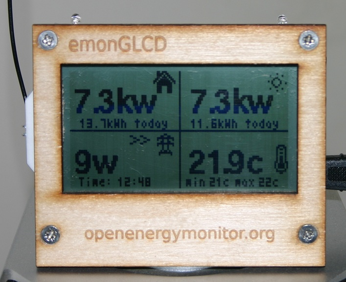
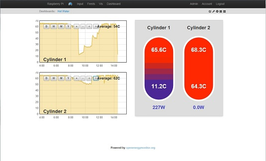
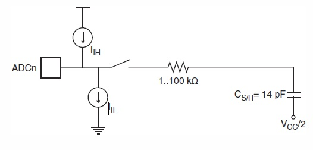

Here's my solution to the Solar PV diverter/emonTx/emonGLCD problem. I know there are others working on something similar but I think this might be sufficiently different to justify posting here
The main features are:
Continuous monitoring, every mains cycle is sampled exactly 50 times
Normal transmission to emonGLCD via the RFM12 every few seconds, this also takes account of every mains cycle so you won’t miss short peaks.
Support for a single DS18B20 temperature sensor
Standard, unmodified emonTx hardware, the triac trigger is driven from the pulse detector jack via a suitable resistor.
Added features 13/12/12 are:
Diverted power is calculated and transmitted to emonGLCD
Triac pulses can be manually set via the serial interface (e.g. enter 2 to pulse every second mains cycle - remember to put this back to 0!)
Upper and lower energy thresholds can be set to minimise flicker.
The design uses one of the ATmega328 timers to interrupt the Arduino sketch approximately every 400 microseconds. The exact timer period is determined by a software phase-locked loop which ensures that the first voltage sample is aligned to the rising zero crossing and the 25th sample is aligned to the falling zero crossing. This means that the samples are always taken in the same place on every cycle.
The sampling process occupies about 30% of the CPU time so there’s plenty left for other tasks like transmission, temperature measurement, print statements etc. These are completely decoupled from the timing loop so they don't interfere with the sampling in any way.
For my test setup I used a 68 ohm resistor in series with a normal LED and the MOC3063 triac driver (saves a few more pico pence by using the triac current to pulse an LED :) ). The MOC3063 is a low current device so you may need a lower value resistor and/or no LED if you use a higher current driver.
I’ve tested the script out on the bench with a kettle/bulb combination and in the real world with 8kW of solar PV and a 10kW heater and it seems to work fine but, as with all software, there’s bound to be a bug lurking in there somewhere.
Obviously this builds on top of the excellent work done by Robin and on the emon library, but it doesn’t use any code from either source. I didn’t use the RFM12 library or the Dallas Temperature library either, mainly because they spend too much time servicing interrupts. This means the code is pretty much self-contained apart from the OneWire library for the DS18B20.
Anyway, here it is. If anyone is brave enough to try it I’d really appreciate your feedback....
Martin
http://openenergymonitor.org/emon/sites/default/files/emonTx_Solar_Controller_Temperature_PLL_0.zip
Here's a picture of the system in balance....

Re: Solar PV power diversion with emonTx, emonGLCD and temperature measurement
Martin.
Thank you for sharing. There is no-way I would have attempted the software for any of this.
I was just about to commit to more hardware having got the 'basic' emonTx and emonGLCD configuration going (so far uncalibrated). I wiill think again!
Thank you to everybody here.
Re: Solar PV power diversion with emonTx, emonGLCD and temperature measurement
Nice work Martin, the phase lock loop is interesting, I went with a hardware triggering on a zero cross.
The mains frequency can change a little bit, do you recalibrate every once in a while to resync ?
The only improvement I'd like is to look at a variable opamp gain on the front of the CT clamp - would save me having to write the code then!!
Re: Solar PV power diversion with emonTx, emonGLCD and temperature measurement
Thanks Stuart and Rob.
Stuart - the phase locked loop updates every mains cycle. It looks at the voltage where the positive going zero crossing should be and continually adjusts the timer period to hold it close to 0. It will track fast changes in the instantaneous frequency, which is needed to follow the distortion caused by the triac pulsing the load. It should be as good as a hardware trigger.
A variable gain front end would be nice but from what I've seen the noise is as big as the signal for small loads so you'll just amplify that too. Maybe a switchable burden resistor and/or a filter would be better?
As an aside, if anyone wants to try this code on a system without an RFM12, you'll need to comment out the the transmit line in the SendResults function, like this ...
void sendResults()
{
//rfm_send((byte *)&emontx,sizeof(emontx));
to prevent the main loop from waiting for ever for the RFM12
Re: Solar PV power diversion with emonTx, emonGLCD and temperature measurement
first post edited to add picture of system running in today's lovely sunshine.
Re: Solar PV power diversion with emonTx, emonGLCD and temperature measurement
That looks brilliant Martin.
I have just finished my setup and was looking to use the exporting energy with minimal h/w changes. I shall order a Triac and opto and try it out as soon a poss. Will report back in a few weeks.
Cheers
Paul
Re: Solar PV power diversion with emonTx, emonGLCD and temperature measurement
MartinR, I've been using OpAmp gain on the CT for a while now, and don't get much issue with noise on the signals - fairly accurate down to 25W from what I can tell, using the standard CT clamp.
Re: Solar PV power diversion with emonTx, emonGLCD and temperature measurement
Sounds good Stuart. In fact, having thought about it a bit more, the main cause of error with the standard setup is leakage from the voltage to the current circuits as explained by Robert Wall here: http://openenergymonitor.org/emon/node/1385. Your circuit would improve this by amplifying the signal without amplifying the leakage.
I've now added calculation and transmission of the diverted power to my sketch, and also the option to set the immersion heater power manually for testing. I'll post the new version when I get chance.
Re: Solar PV power diversion with emonTx, emonGLCD and temperature measurement
Martin
This looks really good. I have already built Robin's mk2 which is busily collecting nano pence in the cupboard but I wanted to build a monitoring system based on the emonTx and when I saw what you have done it makes good sense to combine the two functions especially as you have written interrupt driven code.
I have purchased all the necessary components and am ready to start building so I have attached a schematic of my intended hardware in case anyone has suggestions for improvement before I switch on the soldering iron.
I have left off all of the emonTx CT components in favour of my own. My 60A CT's are supplied with burden resistors fitted. The 100R is for protection only.
Thanks for sharing your efforts so far and I look forward to seeing your amended sketch.
Brian
Re: Solar PV power diversion with emonTx, emonGLCD and temperature measurement
Brian,
I've updated the first post with my latest sketch and listed the new features. I hadn't bothered before because there didn't seem to be much interest in this.
You schematic looks very impressive - slightly different to my "standard hardware" approach!
There may be an issue with the loading on the winding for 5V on your transformer distorting the a/c waveform on the other winding. I don't know if anyone has tried this before but it's a neat solution if it works.
You won't need the pullup on the temperature input as that's built into the emonTx
You didn't like my idea of putting an LED in series with the MOC3041 then: :)
One subtle point, with the standard emonTx CT circuitry there is a slight bias towards positive current due to leakage from the voltage input. I used this as a margin to prevent import leakage. With your more robust reference you may need to add a margin in software.
Good luck with the project, I'll be really interested to hear how it goes.
-martin
Re: Solar PV power diversion with emonTx, emonGLCD and temperature measurement
Martin
I used the dual winding transformer on my mk2 and there was no obvious change between deriving power from the transformer or an external source. The transformer is over engineered for the task which probably helps a lot.
OK regarding the temperature pullup - thanks.
The LED in series with the MOC would work if powered from 5V but I have shown it powered from 3V3 so the combined forward voltage drop of two LED's will be too much. Also, I missed your reference to the MOC3063 which would probably be a better choice. I could run the LED's from 5V but that would elevate the ATMEGA 328 outputs above 3V3 and forward bias the protection diodes making the LED's glow slightly when off.
The 78L05 dissipation is difficult for me to guess as I don't know what the emonTx requires but my guess is it's not much.
Thanks for the updated sketch. I will of course keep you posted but I have both the controller and the emonGLCD to build and I don't breadboard things - I just pinch over peoples ideas that they have already tested :)
As for a lack of interest in your project - nearly 500 reads suggests that someone is interested!
Brian
Re: Solar PV power diversion with emonTx, emonGLCD and temperature measurement
I'm interested in your work too !
I've been following what you, Stuart & series530 have been doing!
I'd be interested in whether you think that you will be able to integrate Robins new interger based code when he publishes it? EDIT- thats if it were to improve on anything that you have done in your code!
I'm running an arduino uno running Robin's MK2 diverter rig for some time and want to do monitoring/emonTx/emonGLCD/emonbase/emoncms
kind regards
Mark
Re: Solar PV power diversion with emonTx, emonGLCD and temperature measurement
There does seem to be quite a few distinct forks at the moment - it would be nice if the various contributors could bring them all together. emonTX+Mk2, integer maths, interrupt based code, etc. etc.
P.
Re: Solar PV power diversion with emonTx, emonGLCD and temperature measurement
Good to hear somebody is listening :)
Mark, my sketch uses integer maths for everything that is done within a mains cycle and has done from the very start.
Paul, I think we all do our own thing because we enjoy it and it's the only way to get exactly what you want and to really understand what's going on. I can see how it makes things difficult for anyone who just wants to build a working system but since it's just software I guess you can try them all and see which one works for you. My sketch does include all the things you listed though.
Re: Solar PV power diversion with emonTx, emonGLCD and temperature measurement
Martin
I think that lots of people are interested and like me are ready to try your code!
I note your comments regarding the PL nature of your code and its plus of not in-balancing readings of pos vs neg cylcles readings due to its fixed cycle of analysing because it is now tied to the mains frequency (Phase locking via interupts)
It takes time too do research and try all that others are proposing! I wish that I could find time to do everything too,.., but family life and work commitments only leave a few precious hours a week!
I'm ready soon to give your code a serious try
Emonbase is ready to go, emonTX also, emonGLCD..., I fell with issues of building due to not reading the additional build instructions regarding the polarity of C13 7 C14 and therefore my emonglcd is not working yet!. I overheated the board due to un soldering and need to fix this... hopefully I can resurrect the PCB board with some hardwire patches
kind regards
Mark
Re: Solar PV power diversion with emonTx, emonGLCD and temperature measurement
Martin
I tried compiling both version of your code and fell at the first hurdle. My library copy of wire or DallasTemperature or OneWire is clearly incorrect but having found many different versions on the net I still have problems. Could you please indicate what library file I need and point me to where I can get it?
Incidentally, using integer math means we can no longer claim to be manipulating nano pence but orders of magnitude more than that :)
Brian
Re: Solar PV power diversion with emonTx, emonGLCD and temperature measurement
http://milesburton.com/Dallas_Temperature_Control_Library#Code.2FLibrary and download the latest lib. Or from Miles' GitHub: https://github.com/milesburton/Arduino-Temperature-Control-Library
Re: Solar PV power diversion with emonTx, emonGLCD and temperature measurement
Thanks fluppie. Maybe I am doing something stupid but each library I try gives different errors. The one you advised gives this:
emonTx_Solar_Controller_Temperature_PLL_0:113: error: 'OneWire' does not name a type
emonTx_Solar_Controller_Temperature_PLL_0.cpp: In function 'void convertTemperature()':
emonTx_Solar_Controller_Temperature_PLL_0:474: error: 'oneWire' was not declared in this scope
emonTx_Solar_Controller_Temperature_PLL_0.cpp: In function 'int readTemperature()':
emonTx_Solar_Controller_Temperature_PLL_0:484: error: 'oneWire' was not declared in this scope
All the other sketches I have compile OK so my environment is basically working. I have not touched Martin's code so whatever I am doing wrong is not obvious to me.
Brian
Re: Solar PV power diversion with emonTx, emonGLCD and temperature measurement
Not sure what's gong on there. I'm just on my way out but I'll take a look when I get home.
I don't use the DallasTemperature library so that shouldn't be in the sketch.
Re: Solar PV power diversion with emonTx, emonGLCD and temperature measurement
Brian - compiled here just fine using a copy of onewire from http://www.pjrc.com/teensy/td_libs_OneWire.html
What platform are you using? If it's a Mac, with the latest Arduino IDE you need to copy the library into the resources within the .app itself. And then restart the IDE. Call/email/pop round if you need help.
P.
Re: Solar PV power diversion with emonTx, emonGLCD and temperature measurement
Thanks Paul. The platform is a PC running Win 7. I tried an XP machine and had the same result. I am clearly making a meal of this but it has me stumped at the moment. The version of IDE I was running was 1.0.1 so I have upgraded to 1.0.3 but that was not the problem.
A screen shot from IDE is attached showing the error.
What I don't understand is that Martin's code has these includes:
#include <Wire.h>
#include <SPI.h>
#include <util/crc16.h>
#include <OneWire.h>
But there is no OneWire.h in his library.
I have tried more libraries than I can shake a stick at now but the 'OneWire does not name a type error remains'
It would be good to resolve this in public in case others make the same silly mistake that I must be making.
Brian
Re: Solar PV power diversion with emonTx, emonGLCD and temperature measurement
Onewire.h isn't a standard library - it's from the zip available at the link I posted above.
You need to unzip OneWire.zip into your Arduino libraries folder
So, alongside /Wire (which contains Wire.h and Wire.cpp) you should also have a folder called /OneWire which contains OneWire.h and OneWire.cpp
P.
Re: Solar PV power diversion with emonTx, emonGLCD and temperature measurement
I told you it would be a silly mistake :) I put the OneWire folder in the old library.
Thanks Paul and everyone else.
Brian
Re: Solar PV power diversion with emonTx, emonGLCD and temperature measurement
Yes, thanks for your help there Paul.
Sorry if this has waisted your time Brian, hope it's worth it in the end
-martin
Re: Solar PV power diversion with emonTx, emonGLCD and temperature measurement
Martin
I've just been reading through your code (not tried anything yet)
I can see that a lot of values are in hexadecimal
I'm showing my lack of knowledge here
What I need to know is what HEX value to use for an 868Mhz emonTX setup. I see you are using a 434Mhz system
// initialise RFM12
delay(200); // wait for RFM12 POR
rfm_write(0x0000); // clear SPI
rfm_write(0x80D7); // EL (ena dreg), EF (ena RX FIFO), 12.0pF
rfm_write(0x8208); // Turn on crystal,!PA
rfm_write(0xA640); // 434MHz
rfm_write(0xC606); // approx 49.2 Kbps, as used by emonTx
//rfm_write(0xC657); // approx 3.918 Kbps, better for long range
rfm_write(0xCC77); // PLL
rfm_write(0x94A0); // VDI,FAST,134kHz,0dBm,-103dBm
rfm_write(0xC2AC); // AL,!ml,DIG,DQD4
rfm_write(0xCA83); // FIFO8,2-SYNC,!ff,DR
rfm_write(0xCEd2); // SYNC=2DD2
rfm_write(0xC483); // @PWR,NO RSTRIC,!st,!fi,OE,EN
rfm_write(0x9850); // !mp,90kHz,MAX OUT
rfm_write(0xE000); // wake up timer - not used
rfm_write(0xC800); // low duty cycle - not used
rfm_write(0xC000); // 1.0MHz,2.2V
EDIT / ADD
I know that the jeelabs calculator needs to be used but I'm too green yet
RFM12B Command Calculator
I see actually A640 refers to 868Mhz but your line comment refers to 434Mhz so I guess I got confused!
Kind regards
M
Re: Solar PV power diversion with emonTx, emonGLCD and temperature measurement
Do you use a modified emnonglcd sketch?
M
Re: Solar PV power diversion with emonTx, emonGLCD and temperature measurement
I see that I'm starting to answer my own questions here
I see the line I need to modify for an 868Mhz system is
// initialise RFM12
delay(200); // wait for RFM12 POR
rfm_write(0x0000); // clear SPI
rfm_write(0x80D7); // EL (ena dreg), EF (ena RX FIFO), 12.0pF for 434Mhz
rfm_write(0x8208); // Turn on crystal,!PA
rfm_write(0xA640); // 434MHz
rfm_write(0xC606); // approx 49.2 Kbps, as used by emonTx
//rfm_write(0xC657); // approx 3.918 Kbps, better for long range
rfm_write(0xCC77); // PLL
rfm_write(0x94A0); // VDI,FAST,134kHz,0dBm,-103dBm
rfm_write(0xC2AC); // AL,!ml,DIG,DQD4
rfm_write(0xCA83); // FIFO8,2-SYNC,!ff,DR
rfm_write(0xCEd2); // SYNC=2DD2
rfm_write(0xC483); // @PWR,NO RSTRIC,!st,!fi,OE,EN
rfm_write(0x9850); // !mp,90kHz,MAX OUT
rfm_write(0xE000); // wake up timer - not used
rfm_write(0xC800); // low duty cycle - not used
rfm_write(0xC000); // 1.0MHz,2.2V
rfm_write(0x80E7); // EL (ena dreg), EF (ena RX FIFO), 12.0pF for 868MHz
Please confirm I have this right for the benefits of others
regards
M
Re: Solar PV power diversion with emonTx, emonGLCD and temperature measurement
Yes, you're right there Mark, bits 4 and 5 of the 0x80d7 command select the band, 01 for the 433MHz band, 10 for the 868MHz band so 0x80e7 is correct for 868MHz band.
The 0xa640 command selects the actual frequency within the band, this value equates to 434MHz for the 433MHz band, hence the comment. If the 868MHz band is selected this same value will result in exactly 868MHz.
All this is explained in the RFM12B data sheet http://www.hoperf.com/upload/rf/rfm12b.pdf but I should probably add a simple band select option at the start of the code to make things easy.
In answer to your other question, I do use a modified emonGLCD sketch in my own system but I tested this code with the standard emonGLCD sketch and it works fine.
Thanks for showing an interest in this and sorry for the delay in answering your questions - busy day yesterday!
-martin
Re: Solar PV power diversion with emonTx, emonGLCD and temperature measurement
Martin
My emonTx based controller and GLCD are now built and tested with some simple sketches.
The next job is to calibrate the system using your code. Looking at this bit of the code:
//--------------------------------------------------------------------------------------------------
// constants which must be set for each system
#define VCAL 233.5 // calculated value is 230:9 for transformer x 11:1 for resistor divider = 281
#define I1CAL 112.6 // calculated value is 100A:0.05A for transformer / 18 Ohms for resistor = 111.1
#define I2CAL 94.8 // this is for CT2, the solar PV current transformer
#define I1LEAD 5 // number of microseconds the CT1 input leads the voltage input by
#define I2LEAD 5 // number of microseconds the CT2 input leads the voltage input by
#define POWERCORRECTION 0 // this value, in watts, may be used to compensate for the leakage from
// voltage to current inputs, it only affects data sent to emonGLCD
#define LOAD_POWER 2770 // power in watts (at 240V) of triac load for diverted power calculation
//#define LEDISLOCK // comment this out for LED pulsed during transmission
//--------------------------------------------------------------------------------------------------
My CT's are 60A with internal burden resistors and there is a variable gain stage between them and the emonTx.
I have changed the above to:
// constants which must be set for each system
#define VCAL 233.5 // calculated value is 230:9 for transformer x 11:1 for resistor divider = 281
#define I1CAL 22.2 // was 112.6 calculated value is 100A:0.05A for transformer / 18 Ohms for resistor = 111.1
#define I2CAL 22.2 // was 94.8 this is for CT2, the solar PV current transformer
#define I1LEAD 5 // number of microseconds the CT1 input leads the voltage input by
#define I2LEAD 5 // number of microseconds the CT2 input leads the voltage input by
#define POWERCORRECTION 0 // this value, in watts, may be used to compensate for the leakage from
// voltage to current inputs, it only affects data sent to emonGLCD
#define LOAD_POWER 2770 // power in watts (at 240V) of triac load for diverted power calculation
//#define LEDISLOCK // comment this out for LED pulsed during transmission
Am I doing the right thing here? My plan is to set the amplifier gain to indicate a 3kW reading on the GLCD with a 3kW load on the emonTx CT.
Some photos of the build are attached.
Brian
Re: Solar PV power diversion with emonTx, emonGLCD and temperature measurement
Hi Brian,
Well done for getting it all together. I like the rubber duck antenna :)
It's hard for me to say what values you should put into IxCAL with your variable gain front end. The value you have shown, 22.2 would limit the peak-to-peak current to 73A (26A RMS). Is that what you want?
I calibrated by system by first getting the voltage right by looking at Vrms in the serial stream and comparing it with a measured value and then doing the same with the current with a known load attached. My power and power factor then came out about right but you may have to tweak IxLEAD if you have a large phase difference between voltage and current (does your amplifier affect the phase?). You may have to add I1rms and I2rms to the print statements.
My total power meter for my solar PV shows volts, amps, power and power factor so it's fairly easy for me to check these but you should be able to do it with a multimeter or a plug-in power meter.
Re: Solar PV power diversion with emonTx, emonGLCD and temperature measurement
Martin
Thanks for the encouragement. I have calibrated as you recommended and now have surprisingly accurate and stable readings for Voltage, CT1 and CT2.
The phase shift contributed by the amplifiers will depend upon the slew rate which for the TS912 is 0.4V/us. This should add a 0.1% phase lag to the CT signals which I consider negligible.
The emonGLCD indications exactly match the serial output from your code so the next hurdle is controlling a load. My triac is connected as Robin’s configuration which is active low on pin 9. You are using pin 3 and I guess active high.
After changing the above I tested using a PV simulation of 435W but failed to see the triac trigger at all.
The variable availableEnergy seems a good place to start looking and I see that the serial output includes:
Serial.print((float)availableEnergy * JOULES_PER_BUFFER_UNIT);
Inspecting the output it never goes much above 0.3
I have added this:
Serial.print((float)availableEnergy);//BD
Serial.print(" ");
Serial.print((float)availableEnergy * JOULES_PER_BUFFER_UNIT);
With this result:
511 507 512 238.57 2.69 435.36 0.00 49.94 300.00 0.00 0.00 PLL is locked
511 506 512 238.62 2.69 436.65 0.00 49.95 300.00 0.00 0.00 PLL is locked
511 507 512 238.57 2.49 436.58 0.00 49.95 300.00 4597.00 0.10 PLL is locked
511 507 512 238.66 2.65 436.64 0.00 49.96 300.00 5686.00 0.12 PLL is locked
511 507 512 238.66 2.39 436.84 0.00 49.95 300.00 0.00 0.00 PLL is locked
511 506 512 238.67 3.49 437.41 0.00 49.95 300.00 0.00 0.00 PLL is locked
511 506 512 238.86 4.31 438.07 0.00 49.96 300.00 0.00 0.00 PLL is locked
511 506 512 239.01 2.44 437.54 0.00 49.96 300.00 0.00 0.00 PLL is locked
511 507 512 238.91 2.46 437.94 0.00 49.96 300.00 0.00 0.00 PLL is locked
511 507 512 239.03 3.06 438.62 0.00 49.96 300.00 0.00 0.00 PLL is locked
511 506 512 238.90 3.50 438.61 0.00 49.96 300.00 0.00 0.00 PLL is locked
511 507 512 238.88 3.41 438.70 0.00 49.96 300.00 231.00 0.00 PLL is locked
511 507 512 239.06 3.45 438.26 0.00 49.96 300.00 0.00 0.00 PLL is locked
511 507 512 239.06 2.64 436.98 0.00 49.96 300.00 0.00 0.00 PLL is locked
511 506 512 238.90 3.37 437.92 0.00 49.96 300.00 5153.00 0.11 PLL is locked
511 507 512 238.61 3.63 437.05 0.00 49.95 300.00 0.00 0.00 PLL is locked
511 506 512 238.56 3.49 435.87 0.00 49.96 300.00 2927.00 0.06 PLL is locked
511 507 512 238.45 3.26 436.60 0.00 49.96 300.00 0.00 0.00 PLL is locked
511 507 512 238.46 3.10 436.92 0.00 49.95 300.00 327.00 0.01 PLL is locked
511 506 512 238.46 2.25 436.19 0.00 49.96 300.00 9101.00 0.20 PLL is locked
511 507 512 238.50 3.67 437.12 0.00 49.96 300.00 0.00 0.00 PLL is locked
511 507 512 238.55 3.17 436.79 0.00 49.96 300.00 0.00 0.00 PLL is locked
511 507 512 238.41 3.62 436.94 0.00 49.96 300.00 0.00 0.00 PLL is locked
If you have any idea what I may have done wrong or can suggest what I should check next I would be very grateful.
Brian
Re: Solar PV power diversion with emonTx, emonGLCD and temperature measurement
Good to see it up and running Brian with the PLL locked.
The variable availableEnergy is the equivalent of Robin's energy bucket in raw internal units and the print statement just multiplies by JOULES_PER_BUFFER_UNIT to get it into man-readable format so you've effectively just added the raw version.
You are correct that this value should increase with solar energy and then decrease when the triac fires.
The most obvious thing I can think of to check is that you have the CTs the right way around (I think I read somewhere that Robin's code has this reversed compared to standard emonTx) realPower1 (the 5th variable in the print statement) should be negative when you are exporting and it's this negative value that causes the available energy to increase.
One thing to note when you do get it working (and you are using the latest version of the sketch) is that there are 2 buffer thresholds (BUFFER_HIGH_THRESHOLD and BUFFER_LOW_THRESHOLD) which I added to minimise flicker. If you want it to behave exactly like Robin's system then set both of these to 1800.
Good luck!
Martin
Re: Solar PV power diversion with emonTx, emonGLCD and temperature measurement
I'm sure you've worked this out for yourself Brian, but just to be sure, you'll need to change
#define TRIACPIN 3 // triac driver pin
to
#define TRIACPIN 9 // triac driver pin
and swap HIGH/LOW in the 3 digitalWrite(TRIACPIN,x) statements
Re: Solar PV power diversion with emonTx, emonGLCD and temperature measurement
Excellent! Now running correctly - a mixture of reversed CT and finger trouble.
Now to swap out the mk2 (Sorry Robin) and install the ????? - what's it called then Martin?
Thanks
Brian
Re: Solar PV power diversion with emonTx, emonGLCD and temperature measurement
Great news Brian, it's good to have another system up and running.
Don't forget if you want to display diverted power in emoncms or a modified version of emonGLCD then the value (in Watts) is in the 3rd integer in the transmit payload (power3)
As for a name, nothing springs immediately to mind - any suggestions?
Re: Solar PV power diversion with emonTx, emonGLCD and temperature measurement
A system photo and some notes on what I have done so far seems a good idea.
The LED's are arranged from left to right as follows:
Red2 Amber Green Red1
I added the following code to provide a useful diagnostic which helps when trouble shooting and makes the box more entertaining to watch.
availableEnergy-=cycleP1; // Solar energy is negative at this point
// **************************************************************************************
// The REDLED1 indicates when the energy bucket level is rising
if ((availableEnergy - previousAvailableEnergy)>stepsize)
digitalWrite(REDLED1,ON);
else
digitalWrite(REDLED1,OFF);
// REDLED2 indicates when the energy bucket level is falling
if ((previousAvailableEnergy - availableEnergy)>stepsize)
digitalWrite(REDLED2,ON);
else
digitalWrite(REDLED2,OFF);
// *************************************************************************************
availableEnergy=constrain(availableEnergy,0,MAXAVAILABLEENERGY);
previousAvailableEnergy = availableEnergy;
Apart from that I changed nothing of any significance in the sketch.
It would be very useful for others to know if my inclusion of amplifiers on the CT inputs is worth the effort or not. As I only have one box it's hard to know so if there are any obvious measurements we can share that will make this clear then let me know.
The modified emonGLCD sketch sounds very interesting and I would very much like to see a copy if possible.
Anyhow, thanks to Martin for sharing all of this and also for his continuing support.
Brian
Re: Solar PV power diversion with emonTx, emonGLCD and temperature measurement
Looks good Brian - now all you need is some sun!
I haven't actually modified emonGLCD to show diverted power, although I intend to ultimately, all my changes are related to my 3-phase supply. I just look at diverted power, temperature etc. on emoncms which I have running on a Raspberry Pi.
jrobbie has done a lot of work on this though so you may be able to adapt his emonGLCD sketch: http://openenergymonitor.org/emon/node/1340
Presumably your amplifiers are effectively fixed-gain once you have set the system up? I'm not sure I really understand what they bring to the party.
Re: Solar PV power diversion with emonTx, emonGLCD and temperature measurement
Martin said:
Presumably your amplifiers are effectively fixed-gain once you have set the system up? I'm not sure I really understand what they bring to the party.
Indeed once set they should not require further adjustment. As to what they bring to the party - well a lot of difficulty for one thing :)
The idea was to ensure that the full range of the ADC is used over the operational range of the unit. This was really a no brain decision when building the mk2 as there was a spare op amp section to play with. Also, placing a cheap device between the CT and the processor seemed like useful protection against damaging spikes. When building the ???? ( how about eMC ? (Monitor/Control)) I decided to copy what I did last time but the effort required was not trivial.
Then there is the charge pump problem that Robert has identified. This should be reduced using an active output stage. Finally, the small phase lag should help bring the current signal back in phase with the Voltage.
So, I end up with 6 op amp's in my eMC. Worth the effort? Not sure really!
Brian
Re: Solar PV power diversion with emonTx, emonGLCD and temperature measurement
"Then there is the charge pump problem that Robert has identified. This should be reduced using an active output stage."
No - eliminated! You only get the charge pump action when the charge is transferred from one capacitor to another - in the case of the emonTx it is the 10 uF capacitor that decouples the bias chain, and it can only leak away via the relatively high impedance bias resistors. If you ground one end of the transducer (c.t or v.t.) and capacitively couple the signal in - as between stages a normal audio amplifier - then all you get is a small spike and the charge almost instantly leaks away via the sensor. The charge does not build up. An op-amp output, direct-coupled, will again remove the charge almost instantly.
Re: Solar PV power diversion with emonTx, emonGLCD and temperature measurement
ok, thanks Brian, I understand your reasoning now.
It should be possible to use the full ADC range with a suitable burden resistor (although I'm not sure why 18 Ohms was chosen for emonTx, 22 seems a better choice for 100A - do you know why Robert?), ATmega328s are only £5 with boot code loaded so not that much more than an op amp to replace, so I suppose the main justification is the charge build up issue.
There is clearly an affect so there's no doubt that the design would be better if one of the techniques Robert has suggested had been used in the first place but it is pretty small, about 10W on my system. It's also fairly constant so I added the option to subtract a fixed value in my sketch. Also, as I mentioned in a previous post, it's quite handy as a margin when diverting power since if favours export.
I think for most people the attraction of being able to use standard hardware that you can assemble in 20 minutes probably outweighs the advantages, but who knows. It would be interesting to compare systems side-by-side one day.
As for the name eMC is as good as anything else - Einstein would approve, especially if there's a mark 2 :)
Anyway, I'm really pleased you've got it all working Brian.
-martin
Re: Solar PV power diversion with emonTx, emonGLCD and temperature measurement
"I'm not sure why 18 Ohms was chosen for emonTx, 22 seems a better choice for 100A - do you know why Robert?"
Not offhand - I didn't choose it. It was originally 15 Ohms.
I've got a dim and distant memory that the max current worst case is just under 100 A with 22 Ohms. I need to check the component tolerances and work through the sums. I'll edit this post with the answer later.So here are the sums:
The c.t. tolerance is 1%, so the 100 A current may give you 50.5 mA in the secondary.
The 3.3 V regulator tolerance is 3%, so the rail may be down to 3.201 V
The divider resistors are 1%, worst case is if each is at the opposite end of the band. Then the midpoint voltage is 1.6 V - 1%, or 1.584 V. The gives an rms voltage to just not clip of 1.12 V.
The required resistance is 1.12/.0505 = 22.178 Ohms. But a 22 Ohms resistor could be +1% at 22.22 Ohms, so it would clip at 99.82 A under very worst-case conditions.
That is with mains power. If you want battery operation, then the supply rail may be down to 1.8 V (the lowest the ATMega328P is specified to), so in that case 12 Ohms would be the appropriate burden.
18 Ohms will give a slight loss of resolution with a normal mains supply and a 5 V PSU, but offer a longer battery life as it will be usable to a lower end-point voltage. It's an engineering compromise.
Re: Solar PV power diversion with emonTx, emonGLCD and temperature measurement
Brian,
Have you used the temperature sensor for anything?
On my 3-phase system I have a sensor in the hot water tank and shut the triac pulses off when it reaches 65C. This is below the mechanical thermostat temperature so it gives me accurate, programmable control and I also know when the heating has stopped. Another option is to monitor the triac heatsink temperature as commercial controllers do.
In either of these applications you need the sketch to cut off power when a temperature is reached and I just wondered if it was worth adding this to the single-phase version here?
Re: Solar PV power diversion with emonTx, emonGLCD and temperature measurement
'In either of these applications you need the sketch to cut off power when a temperature is reached and I just wondered if it was worth adding this to the single-phase version here?'
martin, good idea
also switch on another device when immersion is up to temp
use a spare digital pin and a relay or triac
regards
mark
Re: Solar PV power diversion with emonTx, emonGLCD and temperature measurement
Martin said:
Brian,
Have you used the temperature sensor for anything?
No, but I did have something in mind. My system is unusual so I will try to explain.
The immersion tank is dedicated to the eMC. The only way that heat will reach the tank is when eMC applies power to the immersion heater. If sufficient PV power is available the tank is intended to reach about 65 C at which point a mechanical thermostat will close and this will energise a three port valve which when required will divert the normal flow pipe to the boiler through the now very hot immersion tank which will provide preheated water through the boiler and out to the DHW immersion tank heat exchanger. So yes, there are two tanks. The eMC tank immersion heater limit is set to 70 C.
This heat dump is probably good for about 10kWh consequently in the month that it has been operating (using mk2) it has never quite reached the trip point :( Hopefully things will improve as we get more daylight.
The tank dedicated to eMC is highly stratified until it reaches trip temperature and what would be very interesting is a visual display of the temperature gradient. I have been thinking about another gizmo dedicated to monitoring the tank with multiple sensors and a graphical display. Any ideas?
Brian
Re: Solar PV power diversion with emonTx, emonGLCD and temperature measurement
Fascinating stuff Brian! It never ceases to amaze me the ingenious things people create.
One thing I have learned about monitoring tank temperatures is that it's pointless putting sensors on the outside. I was measuring 45C when the tank was at 65C at the same level. In the end I inserted the sensors into the thermostat tubes.
You can get a bit of a gradient display from just 2 sensors as shown here in emoncms...

I've got 2 tanks too but they're both for hot water. Note the temperature rising in the graphs from solar alone - and that's in December. The figure at the bottom is the power currently being diverted to the immersion heater.
Re: Solar PV power diversion with emonTx, emonGLCD and temperature measurement
Thanks for the thermal stuff.
There is a constant that I don't understand:
#define POWERCORRECTION 0 // this value, in watts, may be used to compensate for the leakage from
// voltage to current inputs, it only affects data sent to emonGLCD
I hasten to add that it's not the only thing I don't understand but this has puzzled me for a while. Hopefully there will be a simple explanation?
Re: Solar PV power diversion with emonTx, emonGLCD and temperature measurement
It's just there as a simplistic way to try to compensate for the charge-pump issue we discussed above. You shouldn't need it with your buffered reference and input amps. It's negligible really anyway and is ignored in emonlib.
Re: Solar PV power diversion with emonTx, emonGLCD and temperature measurement
Ahh good. That is what I guessed but I have observed an odd behaviour that I thought POWERCORRECTION may have been involved with. Let me explain:
Yesterday we had a short period of sunshine and there was briefly sufficient PV for eMC to divert. It was good to see full operation and everything functioned as expected. Later, during the evening I noticed 30W of PV being registered on the GLCD display. This was clearly an error as it was dark outside so I power cycled the GLCD and the PV indication returned to zero. A few hours later 30W registered again on the GLCD and this time I power cycled the eMC and again the PV display returned to zero. The next time it happened I power cycled the PV system using the main AC isolation switch but leaving the GLCD and eMC switched on and again the GLCD PV indication returned to zero.
Clearly the next step will be to get the laptop involved and monitor the serial stream from eMC but there are some issues with that and I may not get it working today.
It happened again while typing this and I power cycled the GLCD and again the PV indication returned to zero. Very odd!
The inverters are enecsys and there are 9 of them.
Brian
Re: Solar PV power diversion with emonTx, emonGLCD and temperature measurement
I think it's quite normal for inverters to consume a bit of power at night Brian, if you have 9 of them them then 3W each isn't much (I haven't checked to see why this doesn't show up as negative power on emonGLCD).
If you look in the standard SolarPV GLCD sketch there's this line...
const int PV_gen_offset=20; // When generation drops below this level generation will be set to zero - used to force generation level to zero at night
This is presumably what the authors thought necessary for 1 inverter. If you set it to 35 say you should be OK.
Re: Solar PV power diversion with emonTx, emonGLCD and temperature measurement
Thanks Martin. I guess the display parameters are subject to personal preference but I don't like the idea of masking some of the data so I simply commented out this line:
// if (cval_gen<PV_gen_offset) cval_gen=0;
Now the power taken by the inverters appears correctly as a negative PV value and that power is also added positively to the total taken from the grid. Clearly no big deal but now if a fault develops that causes excessive power to be consumed by the inverters I should be alerted to it.
EDIT
I can now see that merely commenting out that line is OK for my simulation but something more needs to be done for real.
Re: Solar PV power diversion with emonTx, emonGLCD and temperature measurement
While monitoring the various parameters on my emonGLCD diplay/eMC combination I realised that the figure for house power did not include PV power. Clearly this is not a problem with eMC but this is a topical thread at the moment and if this post should really go elsewhere I am sure someone will advise me.
When power is being drawn from the grid and PV power is being consumed then the house will be consuming the sum of these two figures. However, the standard emonGLCD code that I have been using does not add these figures together.
If emonGLCD is used in conjunction with a dump controller it’s important that the CT used to monitor consumption is fitted on the grid side of the Henley block. This is because the dump controller must be able to measure total power flowing both to and from the grid.
The problem with this arrangement is that emonGLCD SolarPV sketch does not take into account the PV power being consumed by the house when calculating total power use. The attached photo old_code_low_pv.jpg shows the display running the standard SolarPV sketch when CT1 is measuring about 400W and the PV power is very low which the standard code rounds to zero.
Old_code_high_pv.jpg shows what happens when the PV power rises to 384 and the power from the grid measured by CT1 continues to be 400W.
The above demonstration shows that the standard sketch subtracts the PV from the grid power even though the grid power has not changed and the displayed house power has not changed even though the real figure has doubled. This seems wrong to me so I have modified the standard sketch to produce the following result under the same test conditions:
new_code_low_pv.jpg and new_code_high_pv.jpg
My concern here is that if the standard sketch is fundamentally wrong why has it not been noticed by others? Well, maybe it has and I am re-inventing the wheel – it would not be the first time. Alternatively I may have got this completely wrong – we shall see.
Anyhow, the following notes describe the changes I made to achieve the above.
emonGLCD uses the function draw_solar_page. There are 12 parameters but only two are considered here. These are use and gen.
Three parameters are displayed on the LCD, these are house power, PV power and grid power. House power is derived directly from parameter use and PV power is derived directly from gen. Grid power is calculated by subtracting generated power gen from use:
grid=use-gen;
The problem with this arrangement is that the parameter use only represents grid power it does not represent the power being used by the house. When consuming power from the grid house power should include any PV power.
As an example if the PV is generating 1kW and 1kW is being drawn from the grid then the parameter use will equal 1kW and 1 kW will be displayed in the house window on the LCD. In reality the house is using 2kW.
My view is that the house parameter should show the total power being used by the house and this will be use+gen.
The following piece of code with my initials on the extra lines is extracted from the GLCD template that I am using to fix the above:
use=use+gen; //BD
if (use>gen) importing = 1;
if(gen>0) grid = use-gen; //BD
else //BD
grid=use; //BD
It would be very useful to know if others have a different view on this.
Re: Solar PV power diversion with emonTx, emonGLCD and temperature measurement
I've only glanced at this Brian, so may have the wrong end of the stick here but grid=use-gen does give the total power consumed by the house since gen is negative this is an addition not a subtraction
EDITED to say, you are right though that if gen is +ve (eg at night) then it shouldn't be subtracted since it is real consumed power. Maybe the line should be:
grid = use - (gen<0) ? gen : 0;
Re: Solar PV power diversion with emonTx, emonGLCD and temperature measurement
Martin
The point I am raising is far more fundamental than how the value of grid is calculated.
In my previous post I have shown a photo of the standard emonGLCD where the house is consuming 397W and 397W is correctly shown in the window with the house icon.
The next photo shows the result of me intentionally increasing the house consumption to 781W with 384W now coming from PV. You will see that the figure in the house window has not increased but the grid figure has reduced.
The same test with my modified code is correctly showing 769W for the house power.
Obviously I think that the way the standard code works is wrong but maybe there is an argument in favour of not showing the true amount of power consumed by the house. If so can someone explain it to me?
If anyone has time to repeat this test I would be very grateful.
Re: Solar PV power diversion with emonTx, emonGLCD and temperature measurement
Isn't the real problem that the standard GLCD code pre-dates the dump controllers, and nobody has actually considered the implications?
It is certainly good enough to measure two out of the three quantities (Kirchhoff and all that!) but for my money, you don't want to be measuring the two that can be very nearly equal and subtracting them - that way the difference may be subjected to a large percentage error. My suggestion would be to measure grid power (for three reasons: (a) it's what you pay for, (b) you need it for the dump controller anyway and (c) if the controller is working, it will be small to zero) and house consumption (because that's the one you have most control over). Then do the appropriate sums in the GLCD and/or CMS. You've probably got a meter on the inverter anyway, that will allow a cross-check of the generated energy.
Re: Solar PV power diversion with emonTx, emonGLCD and temperature measurement
The standard code works like your modified example Brian. The window with the house shows the total power being used (solar+import).
This isn't a type 1/type 2 issue is it? Which kind of system is yours?
Re: Solar PV power diversion with emonTx, emonGLCD and temperature measurement
My suggestion would be to measure grid power .... and house consumption
That's good if you can do it but you can't in a lot of installations. In my system there is no single cable that carries only the house load (this is a type 2 installation in emonGLCD terms)
Re: Solar PV power diversion with emonTx, emonGLCD and temperature measurement
Ahhhh! Thank you Martin.
The authors of this code are smarter than I thought. Yes changing to type 2 makes it work as I expect it to.
Sorry to waste your time but I have learned a great deal and had a lot of fun just recently if that's any compensation :)
Brian
Re: Solar PV power diversion with emonTx, emonGLCD and temperature measurement
Here is an update on my use of Martin’s eMC
First the bad news - my wife has commandeered the emonGLCD as she thinks it’s wonderful so now I have to build another.
I changed the way the LED’s are driven to take advantage of the ability to display a range of colours instead of changing brightness. This has proved very successful so may be worth sharing. The idea is simply to output complimentary levels to both red and green at the same time so the perceived colour has 255 steps between red and green.
LED_colour=constrain((map(cval_use-(cval_gen*2),0,4000,0,255)+128),0,254);
analogWrite(redLED,LED_colour);
analogWrite(greenLED,map(LED_colour,0,255,255,0));
Obviously the standard LED software is removed.
To get the best effect I put the LEDS on the LCD side of the PCB and made an 8mm window in the front panel that I filled with an opaque material to ensure the two light beams are thoroughly mixed. The best thing I found for this was rapid set Araldite. The technique is make a hole and put sticky tape over the front of the hole and then fill the hole from the back with the Araldite. This results in a nice smooth finish at the front.
I have also made some progress in understanding why my enecsys inverters appear to produce power in the dark. When the PV system shuts down the inverters are powered from the grid and according to the data sheet they each consume <30mW. This means my 9 inverters will be consuming a total of less than 0.3W and yet the emonGLCD display shows about 30W of output – not input! There is nothing wrong with the emonTx when measuring resistive loads so my guess is that the inverters represent a large reactive load and this is fooling the emonTx completely.
I tested the theory using a cordless drill battery charger which has a large capacitor instead of a transformer and this also produced a reverse power indication from the emonTx. I guess the simple solution is to switch the PV system off at night.
Re: Solar PV power diversion with emonTx, emonGLCD and temperature measurement
I think you need to check and correct your PHASECAL. Note there is an error in EmonLib (it might have been corrected - I haven't checked recently) in that the calculation for Vrms (hence apparent power) uses the unshifted voltage, whereas the true power calculation uses the shifted by PHASECAL voltage. The problem is, the phasecal algorithm introduces a small amplitude change, so if your value of PHASECAL is other than 0 or 1, you will not be able to set it up totally accurately.
Getting PHASECAL absolutely correct might alleviate the problem, but at powers like you are seeing, measurement is in the lap of the Gods anyway because you are talking of currents with an amplitude of only a few counts, and you might be seeing more noise and pick-up than current.
Re: Solar PV power diversion with emonTx, emonGLCD and temperature measurement
I like your LED through the front panel idea Brian, it looks very neat in the photos. I'm not so sure about the red to green fading though, I quite like the concept that green means exporting and red means importing.
As for the inverter night power, it's right down in the noise as Robert said. 30W is about 65 microamps through the burden resistor so just over 1mv at 18 Ohms.
My total generation meter shows a power factor of around 0.02 at night and the power is all over the place (but very small).
I don't think this is an issue with my code but it might be interesting to load the standard emonTX code to see if you get different results.
I use a slightly different method to correct for phase error since I only make one voltage measurement per sample and then the 2 current measurements. For any normal phase shift the current samples are between 2 consecutive voltage samples and so I just interpolate between them. The code already compensates for the fixed delays due to ADC sample times so you just need to specify the delays for your system due to differences in the phase shift of the transformers. These constants are specified as:
#define I1LEAD 5 // number of microseconds the CT1 input leads the voltage input by
#define I2LEAD 5 // number of microseconds the CT2 input leads the voltage input by
Re: Solar PV power diversion with emonTx, emonGLCD and temperature measurement
Projecting the LED light through the front panel is a definite improvement but changing the way they are driven is subjective although we like it. Green continues to mean exporting and red means importing just as before but now when import = export the colour is yellow(ish). When you get used to it you can estimate relative levels without looking at the numbers. It’s worth trying and I would be interested in any feedback. Tissue paper should be a good diffuser for testing.
I had already tried the standard emonTx code and the reverse power figure was also 30W.
I used a ‘scope to measure the mains transformer phase shift and concluded that it was about 200uS. This is not an easy measurement to make so I would be interested to know if you have any clever tricks for doing it. My transformer is larger and better quality than the average plug mounted job so maybe the extra iron is significant. Anyway, changing I1LEAD and I2LEAD to 200 reduced the reverse power figure to 15W which is interesting. I need to re-calibrate now to see if anything has changed.
Digressing a bit I purchased another emonGLCD as my wife has nicked the first one. The new one has crashed a couple of times on the first day and yet the old one has never crashed. I notice there is a thread relating to this so I will contribute if I learn anything.
A screen shot of the enecsys night time power is attached. Yellow is voltage and blue is the output of a 60A CT with internal burden.
Re: Solar PV power diversion with emonTx, emonGLCD and temperature measurement
IxLEAD should be the number of microseconds the current leads the voltage Brian (this is because the CT normally has more phase lead than the mains transformer). So you need to put your scope on the current and voltage inputs to the ATmega328 with a resistive load and determine the delta time and then use that for IxLEAD.
Re: Solar PV power diversion with emonTx, emonGLCD and temperature measurement
OK, that is also how I made my measurement but resolving a few uS difference in a 20mS period sinewave is not that easy. It would be easier if the signals were squared up first.Have now read your reply properly!
Anyhow, I have decided that a useful enhancement to my system will be to make the GLCD LED's flash when the dump load has absorbed all that it can and real export is occurring. This will be very useful to indicate when it's time to switch on the dishwasher.
I can see how this could be done by changing both the emonTx and the GLCD but it should be possible by changing only the GLCD. It then occurred to me that it's probably been done before so if anyone has done this already I would be very interested to see how.
Re: Solar PV power diversion with emonTx, emonGLCD and temperature measurement
I decided that a new measurement was required!
Channel 1 was placed on the output of a CT monitoring the secondary of a 12V transformer with a 20W load. Channel B was looking at the 12V AC.
The CT wave crosses zero ~ 200uS before the Voltage.
To double check a repeat of the above using a 1 Ohm sense resistor instead of a CT shows no phase shift.
So, you are right, the phase shift is in the CT and not the transformer. It's curious that you see 5uS though.
Re: Solar PV power diversion with emonTx, emonGLCD and temperature measurement
It's probably because your mains transformer is much better than the standard one from the shop and so has less phase shift. The CT and a/c transformers have very similar phase shift in my system.
In answer to your previous post, isn't it just a matter of checking the grid value? If it's negative you are exporting and you could simply flash the LEDs when it's more negative than a certain value. If the dump load is absorbing all the energy there should be no export.
Re: Solar PV power diversion with emonTx, emonGLCD and temperature measurement
The best way to measure phase shift is to put the 'scope in X-Y mode.
sin(phi) = X / Y
Re: Solar PV power diversion with emonTx, emonGLCD and temperature measurement
Martin's code also transmits a value for diverted power. This is a very useful parameter to display and I have changed the temperature display quadrant on the GLCD to represent diverted power. An image is attached showing the icon that I have used.
I looked at the way the diverted power is derived and I found the following which I have a question on:
emontx.power1=(int)(realPower1+0.5);
emontx.power2=(int)(realPower2+0.5);
emontx.power3=(int)(divertedPower+0.5);
emontx.Vrms=(int)(Vrms*100+0.5);
Why is 0.5 added to all parameter?
Re: Solar PV power diversion with emonTx, emonGLCD and temperature measurement
Why is 0.5 added to all parameter?
Rounding to the nearest integer:
(int) (246.47)+0.5 = (int) 246.97 = 246
(int) (246.52)+0.5 = (int) 247.02 = 247
Re: Solar PV power diversion with emonTx, emonGLCD and temperature measurement
I guess it all depends what is important to you. In my sketches I simply monitor the grid power and the solar power. I really have little interest in what the house is actually consuming. The grid power is of interest because this is what I pay for. The solar power is important because this is what I am paid for.
Each to his own though ....
Re: Solar PV power diversion with emonTx, emonGLCD and temperature measurement
Why is 0.5 added to all parameter?
Rounding to the nearest integer:
(int) (246.47)+0.5 = (int) 246.97 = 246
(int) (246.52)+0.5 = (int) 247.02 = 247
So simple eh?
Thanks for that.
Re: Solar PV power diversion with emonTx, emonGLCD and temperature measurement
I think at last I am getting there! I have a question, but first a little background information is in order.
I am using Martin's Sketch:
History:
2/12/12 first published version
3/12/12 diverted power calculation & transmission added
4/12/12 manual power input added for testing
10/12/12 high & low energy thresholds added to reduce flicker
on emonTx and standard emonGLCD (The one that locks-up now-and-again). at 868MHz.
My Inverter connection is to a Consumer Unit that is 26m from the Main Distribution Unit. For convenience of testing and to achieve best RF signal coverage I have situated emonTx close to another Consumer Unit which is 14m from the MDU (on a separate sub-main) and central to the house. I monitor system voltage with Mascot transformer here. The SCT-013-000 CT's are 14m away for the incoming supply at MDU and 12.5m away for the PV Inverters at the other CU. Because of these distances I decided to use a CT on Line and a CT on Neutral with differential input op-amps for buffering. It has been a lot of 'trouble' getting this set up (I empathize with Brian D on this one). However it has enabled me to check in each place that the CT's are both securely fixed by ensuring I have balanced inputs with a dual trace oscilloscope. I am reasonably happy that the phase shift between voltage and current is negligible using a 10A resistive load for calibration so far. For running Martin's sketch I have therefore set
// constants which must be set for each system
#define VCAL 226.3 // calculated value is 230:9 for transformer x 11:1 for resistor divider = 281
#define I1CAL 112.6 // Grid (My Burdens are 36R followed by differential op-amp LMV358 at 5v and level shifting to emonTX)
#define I2CAL 42.85 // PV (My Burdens are 75R .... ditto ....)
#define I1LEAD 0 // number of microseconds the CT1 input leads the voltage input by
#define I2LEAD 0 // number of microseconds the CT2 input leads the voltage input by
#define POWERCORRECTION 0 // this value, in watts, may be used to compensate for the leakage from
// voltage to current inputs, it only affects data sent to emonGLCD
#define LOAD_POWER 2770 // power in watts (at 240V) of triac load for diverted power calculation
//#define LEDISLOCK // comment this out for LED pulsed during transmission
Here is a snap-shot of the serial monitor figures from emonTx with my Solar PV providing some export to the grid (earlier today). Outside temperature monitoring appears to be working. I haven't yet got around to coupling up the dump load so the energy bucket is full.
514 506 519 240.45 -1081.08 1612.62 2780.36 50.00 4.12 3600.00 PLL is locked
514 506 519 240.25 -1072.36 1599.52 2775.81 50.00 4.12 3600.00 PLL is locked
514 506 520 240.35 -1058.06 1575.07 2778.09 50.00 4.12 3600.00 PLL is locked
514 506 519 240.49 -934.27 1456.89 2781.26 50.00 4.12 3600.00 PLL is locked
514 506 519 240.48 -994.15 1519.13 2781.13 50.01 4.12 3600.00 PLL is locked
513 506 519 240.55 -1130.13 1663.09 2782.81 50.02 4.12 3600.00 PLL is locked
513 506 519 240.48 -1046.08 1589.24 2781.17 50.02 4.12 3600.00 PLL is locked
513 506 519 240.71 -1130.50 1674.16 2786.40 50.02 4.12 3600.00 PLL is locked
513 506 519 240.61 -1274.86 1813.91 2784.08 50.01 4.12 3600.00 PLL is locked
Now the sun has gone in I get this:
513 506 518 237.26 499.36 683.52 0.00 50.05 4.43 0.00 PLL is locked
513 507 519 237.18 484.69 693.94 0.00 50.06 4.43 0.00 PLL is locked
513 506 519 237.25 480.15 701.94 0.00 50.07 4.43 0.00 PLL is locked
513 506 518 237.64 473.13 711.85 0.00 50.07 4.43 0.00 PLL is locked
513 507 519 237.73 459.46 723.21 0.00 50.07 4.43 0.00 PLL is locked
513 506 519 237.78 442.54 732.82 0.00 50.07 4.43 0.00 PLL is locked
The emonGLCD is giving sensible readings with green LED when exporting and red LED when generating but not exporting. However the cloud icon is present in both cases. Can that be right?
The emonGLCD displays inside temperature - I guess this is to be expected since I don't think there is any mechanism in place on this system to transfer the emonTx figure to it.
My main question relates to these serial monitor snapshots.
I take it that: realPower1 is 'grid (export -ve)', realPower2 is 'generated PV' and divertedPower is: What?
My emonGLCD displays 'grid' + 'generated PV' in the top left box which is my House consumption. That seems fine in both cases.
I am not understanding what the purpose of divertedPower is. Have I interpreted the inputs correctly? Can one of you help please?
BTW. A big THANKYOU to all you contributors and sorry for the length of this Comment.
Re: Solar PV power diversion with emonTx, emonGLCD and temperature measurement
Well done for getting this far Rob. It looks like your are as masochistic as Brian on the hardware front!
The cloud icon on emonGLCD is selected based on the % of maximum Solar power that is currently available. You need to set the maxgen constant in the emonGLCD sketch to match your system.
The outside temperature is transmitted by my sketch but you will have to modify the emonGLCD sketch to display it.
Everything looks fine in your serial prints (assuming you were generating around 1600W and then 700W).
The diverted power is the power that is being sent to the dump load. It's calculated from the percentage of cycles that are diverted to the dump load. In this case the triac output is permanently on because you have no load connected so it thinks the full 2770W that is set in the LOAD_POWER constant is being diverted. The printed values vary slightly from this value because I correct for the actual supply voltage.
hope this helps,
Martin
Re: Solar PV power diversion with emonTx, emonGLCD and temperature measurement
Hello Rob – welcome to Martin’s thread – good to see another implementation working.
The standard emonGLCD does not display diverted power but both Martin and I have added this although not in exactly the same way. I found that the value needs to be integrated over several readings to make it useful.
The next line is from your post above:
#define LOAD_POWER 2770 // power in watts (at 240V) of triac load for diverted power calculation
My AC current meter is limited to 2A so measuring the power of my dump load was difficult. I settled for measuring the resistance including the power cable between the tank and the controller:
#define LOAD_POWER 2976
Today was a milestone for me because my 117 litre dedicated heat dump reached operating temperature for the first time and the stored heat was then transferred to our DHW tank. Great stuff!
Brian
Re: Solar PV power diversion with emonTx, emonGLCD and temperature measurement
Martin
It looks like your are as masochistic as Brian on the hardware front! - I certainly am.
Thanks for explaining the cloud icon. I will look out for that when I update my emonGLCD with other stuff.
generating around 1600W and then 700W - Sure was. Makes a nice change after 8 days of near complete snow obscurity.
Your last paragraph - No wonder, it makes sense to me now.
Thanks for the superb work on the software and the reassurance.
Now to connect up a few LED's, the SSR and the dump load. I'm trying the Sharp S216S01 as the switch. Doesn't look like it will be as efficient as the Triac but one component less and easier to fit in an aluminium box 7m away!
Edit: Correction I'm starting with the S216S02 zero crossing device.
Re: Solar PV power diversion with emonTx, emonGLCD and temperature measurement
Greetings Brian
It would be really neat to run a copy of your code on my emonGLCD. No great urgency (you understand :-) ) since I have plenty else to keep me busy and as far as I am aware the jury still seems to be out on what is causing those lock-ups.
I only have one emonGLCD at present and no base set up, so no facility to set time of day yet. But I have other things communicating on 868MHz.
I have a Kewtech KT203 which seems to tally well with my Avo Model 8 at 10A. Haven't measured what my dump load is yet but says: 2.7 - 3kW 230 - 240v. I notice with my 10A (convector heater and light bulbs) test load that the current starts a little high then drops to a steady state as the resistance of the elements increases with temperature. It will be interesting to see how the immersion heater fairs in this respect.
Before getting involved with this project I had considered installing solar thermal on another roof area - not any longer!
Good Wishes to all sun seekers!
Re: Solar PV power diversion with emonTx, emonGLCD and temperature measurement
Have you considered using RF signaling between the emontx and SSR unit, rather than a cable?
Re: Solar PV power diversion with emonTx, emonGLCD and temperature measurement
Hi Paul
I think I did ask about this some time ago - without great enthusiasm. Since then I recall seeing a comment somewhere from Robert Wall to Robin (I think) suggesting that it ought to be possible ?
It would be nice to do - especially for the under-floor electric heating that I never use at present or the two electrically heated towel rails that are in less than convenient places! I suspect some additional intelligence may be required to ensure that the towel rails are hot when you need them. After a shower no-doubt Edit: sun or no sun.
But I got to get this other stuff working first.
Edit: I think it is important to stress that while it would be nice to control towel rails, as far as I can see it really is a non-starter. These things are usually located in bathrooms and kitchens often on spurs from ring mains so they are really hard to "get at". Any adaptation would have to be done within the spur outlet - I think not for the faint hearted! At least the under-floor heating is on a separate circuit from the consumer unit.
Re: Solar PV power diversion with emonTx, emonGLCD and temperature measurement
On 24/12/12 Brian D wrote: "Later, during the evening I noticed 30W of PV being registered on the GLCD display"
Having looked into this a bit more I'm now convinced that, at least on my system, this is caused by residual charge on the ADC sample and hold capacitor.
This effect was discussed at some length and simulated by Robert Wall in this thread. In that case it was large voltage ADC values affecting the small current values but in this case it's the relatively large currents on CT1 affecting the zero ADC values on CT2.
On my 3-phase system I see about 0W, 20W and 10W on the 3 phases and I think the difference is due to where the bias voltage sits relative to the ADC steps as discussed on the above thread. I also noticed that the value is roughly proportional to the power being used by the house on each phase.
It's a bit surprising that Brian's system shows the same effect with his buffered reference so it would be good to verify if it is - maybe by unplugging or shorting out CT1.
Re: Solar PV power diversion with emonTx, emonGLCD and temperature measurement
Martin
Interesting. Would it be worth taking a few samples from the same source in succession and could one then see if the effect diminishes?
Re: Solar PV power diversion with emonTx, emonGLCD and temperature measurement
It's difficult to take many samples Rob because of the time constraints but I did try reading CT2 twice in succession but it didn't appear to make much difference. I also wrote a bit of code to subtract a small amount of the house power from the solar power and that worked really well but it's a bit of a bodge.
In reality the error is insignificant but it's annoying and I would at least like to be able to fully understand it's source. In the standard emonGLCD code they simply force the solar output to 0 if it's below a certain value but I'm with Brian in not liking that approach.
Re: Solar PV power diversion with emonTx, emonGLCD and temperature measurement
Are you sure it isn't a genuine small load (milliamps), but with a completely screwy power factor?
Simple test would be to unclamp the CTs and see whether the small load still registers.
P.
Re: Solar PV power diversion with emonTx, emonGLCD and temperature measurement
As I mentioned, one way to greatly reduce the charge pump effect is to ground one end of the c.t. / v.t. and couple the live side of the signal into the ADC input via the 10µF (?) capacitor (rather than having the capacitor between the signal source and ground). That way, the charge off the s&h capacitor gives a very short voltage spike only and the charge and voltage cannot build up.
Re: Solar PV power diversion with emonTx, emonGLCD and temperature measurement
I guess I'm just reluctant to hack the boards about for the sake of a few watts but I will try that approach on a spare emonTx on the bench.
I noticed in the ATmega328 manual that they show a resistance in series with the s&h capacitor (although I'm not quite sure what value they are trying to represent). You didn't include that in your simulation Robert, was there a reason for that?

Re: Solar PV power diversion with emonTx, emonGLCD and temperature measurement
Hmmm...
Can't remember now! Isn't that resistor the switch resistance itself? Doesn't it say somewhere? Why not rerun it with it included and see? I think all I was interested in was establishing the mechanism.
Re: Solar PV power diversion with emonTx, emonGLCD and temperature measurement
OK, I'll have a play when I get chance. Also noticed that the capacitor is connected to Vcc/2 not ground but that shouldn't make any difference.
Re: Solar PV power diversion with emonTx, emonGLCD and temperature measurement
On 24/12/12 Brian D wrote: "Later, during the evening I noticed 30W of PV being registered on the GLCD display"
Much water has slipped under the bridge since then. I had several problems including operating the emonGLCD with the wrong solar system type. Now I understand it all a bit more and the system behaves much as expected but the night time generation figure has been hidden from view by increasing the value of PV_gen_0ffset to 40 in the emonGLCD sketch. This bodge was implemented temporarily while I sorted all the other problems.
The strange midnight PV generation that I was measuring was real in the sense that removing the PV CT reduced the reading to zero and an oscilloscope confirmed that there is a real 50 Hz signal coming from the CT. However, when the phase relationship to Voltage was measured it was obvious that this is a highly reactive circuit therefore the indicated reading is going to be meaningless. A ‘scope photo is attached showing the night time PV current with mains transformer output. There are 9 enecsys micro inverters on this circuit.
First a reminder that I have only used the ATmega328 ADC with buffered CT sources so the charge pump problem has never applied to either my mk2 or eMC units. Not surprisingly I have not tried to quantify a problem that I don’t appear to have but it will be very interesting to see how effective the buffers are. My Voltage sensing signal on A2 is not buffered.
I have now changed the code to prevent truncating PV values to zero and then ran the following tests:
Background house power ~ 100W
PV CT on mains cable LCD indicating ~ 80W (Not much sun)
PV CT removed from mains cable with clamp closed LCD indicating -1W PV
House power 3kW
LCD indicating 7W PV
House power 6kW
LCD indicating 16W PV
Repeating the above but with the PV CT unplugged:
House power 3kW
LCD indicating 3W PV
House power 6kW
LCD indicating 7W PV
Repeating the above but with a shorting plug inserted in the PV CT input:
House power 3kW
LCD indicating 0W PV
House power 6kW
LCD indicating 0W PV
Tonight when the inverters go to sleep I shall check the indicated PV power level again.
Re: Solar PV power diversion with emonTx, emonGLCD and temperature measurement
Thanks for that Brian. Interesting to see that the values in your system are roughly proportional to the house power too.
I also tried Paul's suggestion of unplugging the PV CT and sure enough it goes away. Unplugging the house CT has no affect so clearly my theory js wrong. I'm now thinking it might just be pick up from the house wiring.
Re: Solar PV power diversion with emonTx, emonGLCD and temperature measurement
> "I'm now thinking it might just be pick up from the house wiring."
I checked that but the only way my PV CT picks up a field is either when it's near a transformer or if the two ferrite cores are not in proper contact with each other.
Martin - How have you wired your CT's? Mine have the screen connected to the shield and the coil connected between the two signal pins. The burden is inside the CT. As supplied the screen was disconnected and the coil was between tip and ground. I believe this is how a regular emonTx is wired - mine is different.
My eMC unit is housed in a die-cast aluminium box and all the sensitive wiring is screened. If this is some sort of pick up it should be possible to influence it. Tomorrow I will try putting the PV CT inside a screened enclosure.
I checked the PV power this evening and it is indicating 17W from the inverters. This is why I implemented the rounding to zero check. Otherwise I had difficulty explaining to my wife and visitors why power was coming from my solar panels even when it's dark.
Re: Solar PV power diversion with emonTx, emonGLCD and temperature measurement
My CTs are still as supplied. I just checked a spare one I have and the screen is touching the shield but only because a few strands are sticking out a bit.
You could tell your wife there's a full moon tonight - might work :)
Re: Solar PV power diversion with emonTx, emonGLCD and temperature measurement
Otherwise I had difficulty explaining to my wife and visitors why power was coming from my solar panels even when it's dark.
Actually, if some of my other monitoring kit is to be believed, the power flow is TO the inverter(s), not from it. It's just that the value is wrong because of the horrible PF. My Eco-Eye gets it almost right - the foil wrap phase sensor seems to do a brilliant job of correcting for phase angle.
P.
Re: Solar PV power diversion with emonTx, emonGLCD and temperature measurement
> Tomorrow I will try putting the PV CT inside a screened enclosure.
The enclosure I used was a small steel sweet tin. A small hole was made to accept the CT cable and the lid was fitted. The majority of the CT cable was held inside the tin.
The test above of CT removed from mains cable was repeated and no observable difference was seen.
These CT's are all SCT-013-060 (yhdc.com) and are supplied with internal burden resistor. Taking one apart I measured the following:
DC resistance measured at the jack plug - 23R
Coil resistance (burden removed) 90R
Burden 30R + 1R in series
The next test was to fit a 30R resistor inside a jack plug and use that in place of the jack plug with shorted pins. The result is the same as shorting the pins - zero PV power reading even with 6kW house power.
Clearly the presence of the CT coil is significant and some sort of pick-up is the likely explanation yet unless the CT coil is placed near an obvious electromagnetic field like a transformer the indicated signal does not change.
At the moment I am stumped.
Re: Solar PV power diversion with emonTx, emonGLCD and temperature measurement
Well done for checking that out Brian, sounds like a lot of work but seems pretty conclusive regarding the screening.
Are you saying that you get the same few Watts output from the CT even if it's well away from all the cables?
My assumption was that the CT was picking up the stray magnetic field from the house wiring when it was carrying a high current, like the 24A you'd get from your 6kW. In my setup the main house cables run passed the solar CTs in a 100mm duct.
I've attached the plot for my solar output last night. My house is all electric and it's clearly affected by the house power. It drops to less than 15W when the heating goes off. Then is steady at 35W when the immersion heaters come on with Economy 7, then fluctuates as they flick on and off when they reach temperature. The power goes up again at 4:30 when the floor heating comes on until the Economy 7 period ends.
Re: Solar PV power diversion with emonTx, emonGLCD and temperature measurement
> Well done for checking that out Brian, sounds like a lot of work but seems pretty conclusive regarding the screening.
The tricky bit was finding an alternative container for my wife’s sweets :)
> Are you saying that you get the same few Watts output from the CT even if it's well away from all the cables?
Yes! Test condition was house power ~ 3kW and moving the PV CT about 1m from all cables the PV power reading on the LCD does not change. Placing the PV CT near the mains cables also has no effect unless it gets near the house CT but that is not surprising as it’s another transformer. You mentioned having a spare CT maybe you could repeat the test of waving a CT in air.
> My assumption was that the CT was picking up the stray magnetic field from the house wiring when it was carrying a high current, like the 24A you'd get from your 6kW. In my setup the main house cables run passed the solar CTs in a 100mm duct.
This is also what I had assumed. The really surprising result is that fully screening the CT does not affect the ‘pick-up’. Have we discovered a new type of cosmic ray detector? – I don’t think so. Results like this make me very suspicious of the experiment. I shall try a 30R resistor on the end of a twisted pair and then try screening it.
> I've attached the plot for my solar output last night. My house is all electric and it's clearly affected by the house power. It drops to less than 15W when the heating goes off. Then is steady at 35W when the immersion heaters come on with Economy 7, then fluctuates as they flick on and off when they reach temperature. The power goes up again at 4:30 when the floor heating comes on until the Economy 7 period ends.
The PV figures you are seeing are larger than mine could you put some power figures in for your immersion heaters and flooring? It would be useful to know if you have the same PV pick-up power relationship as I am seeing.
Re: Solar PV power diversion with emonTx, emonGLCD and temperature measurement
The PV figures you are seeing are larger than mine could you put some power figures in for your immersion heaters and flooring?
Don't forget my system is 3-phase Brian so the plot shows the sum of the output of 3 CTs. The spread isn't even though, for example 35mA will be spread something like, 5,20,10mA across the 3 phases.
The immersion heaters are both standard 3kW jobbies, but again they are on different phases. It's harder to say for the floor heating as I don't know how much was actually turned on at the time.
Re: Solar PV power diversion with emonTx, emonGLCD and temperature measurement
Three phase, yes I was overlooking that slight complication.
Just now I ran a test using a 30R resistor on the end of 1m twisted pair plugged into the PV CT socket. The LCD indicates 0W for all house power up to 7kW. In desperation I wrapped the twisted pair twice around the live mains incomer and still saw a zero reading.
For the next test I added a 120V winding of a mains transformer just to see if adding a big inductor has anything to do with it and the same 0W reading was seen.
I then repeated the test with the CT and saw the same 'cross talk' result I reported further back in this thread.
OK, it's not magic but at the moment it has me stumped.
Re: Solar PV power diversion with emonTx, emonGLCD and temperature measurement
Brian, are you measuring voltage, as well as current, to calculate power?
My "test-rig" is hardly hi-tech, and I've never seen more than a Watt of leakage with any V*I calculations.
Re: Solar PV power diversion with emonTx, emonGLCD and temperature measurement
How are you connecting the c.t's output into the ADC input? There are two ways of doing it. The Atmel app.note grounds one side of the c.t. and a.c. couples it into an op.amp (albeit through some switches):
whereas the OEM way is to lift the 'earthy' end of the c.t. to the midpoint bias voltage and a.c couple that to ground, and d.c. couple the signal into the adc input:
I wonder whether this has a bearing on pickup? In theory, there shouldn't be any difference.
The Atmel method is easily adapted for a straightforward input:
Re: Solar PV power diversion with emonTx, emonGLCD and temperature measurement
Gents
Since I am running Martin's sketch on emonTx I thought I had better check if I could see the same effect.
You will no doubt be disappointed to hear that I have not seen any deviation from '0' on my emonGLCD PV quadrant when the two Sunny Boy inverters are resting.
There are however I suspect a lot of differences in my hardware (to recap):
"My Inverter connection is to a Consumer Unit that is 26m from the Main Distribution Unit. For convenience of testing and to achieve best RF signal coverage I have situated emonTx close to another Consumer Unit which is 14m from the MDU (on a separate sub-main) and central to the house. I monitor system voltage with Mascot transformer here. The SCT-013-000 CT's are 14m away for the incoming supply at MDU and 12.5m away for the PV Inverters at the other CU. Because of these distances I decided to use a CT on Line and a CT on Neutral with differential input op-amps for buffering. It has been a lot of 'trouble' getting this set up (I empathize with Brian D on this one). However it has enabled me to check in each place that the CT's are both securely fixed by ensuring I have balanced inputs with a dual trace oscilloscope. I am reasonably happy that the phase shift between voltage and current is negligible using a 10A resistive load for calibration so far."
Burden resistors are
1) for PV - close to the motherboard where the buffer amps and are situated, value 75R for each.
2) for Grid - inside D connector shell close to the buffer amp. 36R for each.
I plug emonTx onto the motherboard without using the Jacks. All my cables are screened and taken to project 0v at the motherboard then connected by a single 'cpc' to CU earth.
At first I thought the effect might be noticable if I ran either or both of the channels one-legged. - No, I cannot see 'the problem' with any heating loads up to 11kW (Thanks to my wife for ensuring the power shower didn't cause a flood!)
Last night I was thinking that the Jacks might be giving you a Seebeck Effect but I am sure you won't be consciously changing their temperature when you apply different loads.
However I suspect it would be worth you trying to reduce the current in the CT - Burden Loop, and then attenuate the voltage produced as I do? This may be a way at least of changing the circuit characteristics to try and establish where the effect is coming from.
I have one additional difference but this I think is hardly worth mentioning. Mine is a TT system (so I have an Earth Rod)
I suspect your systems will be TNCS or TNS.
Hope this may in some way help.
Re: Solar PV power diversion with emonTx, emonGLCD and temperature measurement
Just to add (since Robert Wall has been active while I was compiling the above)..
I generate 2.5v reference and send it out to all the CT's !
Having produced buffered signals for use on a Uno, I then divide down and AC couple into the emonTx using the original emonTx bias networks.
Sorry I haven't done a useful circuit of the configuration that I feel happy to share yet !!
Re: Solar PV power diversion with emonTx, emonGLCD and temperature measurement
Robin said:
Brian, are you measuring voltage, as well as current, to calculate power?
My "test-rig" is hardly hi-tech, and I've never seen more than a Watt of leakage with any V*I calculations.
Yes indeed V & I. The difference here is that both the PV power and house power are being calculated. I believe your rig only calculates house power so you will not have encountered this problem.
Robert said:
How are you connecting the c.t's output into the ADC input?
I copied my schematic in post 1535/9474 above but it is DC coupled like the OEM circuit.
RobP
The behaviour I am trying to understand is not the ‘phantom’ power consumed by the sleeping inverters but the apparent pick-up or cross talk between the measured PV power and house power.
I believe you are running the standard emonGLCD sketch which zeroes any PV power level below I think it’s 30W so you will not see the effect.
Re: Solar PV power diversion with emonTx, emonGLCD and temperature measurement
Brian
Yes I am running the standard emonGLCD sketch. OOPs !
(A little knowledge is a dangerous thing)
Re: Solar PV power diversion with emonTx, emonGLCD and temperature measurement
Hmm. With the standard OEM connection, the 'earthy' side of the c.t. secondary has a 10 µF capacitor with a reactance of 318 Ohms @ 50 Hz connecting it to earth. If you've got a capacitive potential divider formed by stray capacitance from the main cable for the 'top' leg and 10 µF for the bottom, you only need 100 pF of strays to give you 3 mV (~= 1 count out of the ADC). OK, you probably haven't got 100 pF, maybe only 20 or 30, but it just goes to show! I'd never done that sum before.
RobP,
If you're measuring the line and neutral currents, (and then halving the result) then surely any common-mode pickup will be removed by the op-amp, but if it is pickup from only one, then it won't. Once you've removed the mask, it would interesting to know if that is the case.
I've had another thought. Has anyone tried screening the secondary of the c.t.? To do so, you'd need to disassemble it and wrap a foil screen around the winding - making sure of course you didn't make a shorted turn - and earth it. That should establish whether it was pickup of an electric field (it would go away) or a magnetic one (it wouldn't).
But let us not forget that if the bias happens to sit one microvolt away from the threshold between two counts of the ADC, then 2 microvolts of anything - pickup, signal or any other noise - will be seen as a transition and appear as a current.
Re: Solar PV power diversion with emonTx, emonGLCD and temperature measurement
If you're measuring the line and neutral currents, (and then halving the result) then surely any common-mode pickup will be removed by the op-amp, but if it is pickup from only one, then it won't.
Exactly. My setup enables me to run either balanced or from either line or neutral. I can halve the value of i/p resistance to op-amp with jumper link to double gain and compensate for one-legged operation.
Once you've removed the mask, it would interesting to know if that is the case. - What is it I need to change in the emonGCLD code to do this?
Regret I may not be able to do this check until Friday (other commitments...)
Re: Solar PV power diversion with emonTx, emonGLCD and temperature measurement
Just comment out this line in the GLCD script Rob...
if (cval_gen<PV_gen_offset) cval_gen=0; //set generation to zero when generation level drops below a certian level (at night) eg. 20W
or make PV_gen_offset 0
Re: Solar PV power diversion with emonTx, emonGLCD and temperature measurement
Brian D: Yes indeed V & I. The difference here is that both the PV power and house power are being calculated. I believe your rig only calculates house power so you will not have encountered this problem.
Well, that depends on what is seen as the problem. The 'standard' way to ascertain the amount of surplus power is to make two measurements and then subtract them. The OEM's Solar Monitor page shows two ways of doing this.
FWIW, I believe that just taking just one measurement, at the supply point, is a far better approach. By this means, determining the difference between the generated and consumed powers can be reliably entrusted to Kirchoff.
Moreover, the supply meter works in precisely this way; it only sees the net flow of energy to/from the grid. For the purpose of diverting surplus power, we need to work in harmony with the supply meter. Having both systems (meter & Arduino/emonTx) acting at the same place seems the best way for any power router to operate.
(I appreciate that many people want to see other data as well, but this is a power diversion thread!)
Re: Solar PV power diversion with emonTx, emonGLCD and temperature measurement
Robin said:
Well, that depends on what is seen as the problem.
The ‘problem’ in this instance is of trivial importance and the only reason to pursue it is for the intellectual satisfaction of learning from it. This thread has grown considerably and the problem may have become buried by the proposed explanations so I will try to re-define it briefly.
I have a current transformer (with internal burden) feeding an analogue input to the emonTx (CT1) via a TS912N op amp. A second current transformer also buffered by a TS912N drives another analogue input to the emonTx (CT2). The emonTx burden resistors, potential dividers and capacitors are not fitted.
Under test conditions T1 is monitoring the house current using the live wire. CT2 is plugged in but has no cable passing through the CT.
Increasing the house power consumption by about 3kW is increasing the reading obtained from CT2 by about 7W.
Replacing CT2 with a similar length of cable with a same value burden resistor shows none of the above cross-talk. Screening CT2 with a metal enclosure makes no difference.
The standard emonGLCD software ‘deals’ with this problem by making any CT2 reading less than 20W = 0W.
FWIW, I believe that just taking just one measurement, at the supply point, is a far better approach. By this means, determining the difference between the generated and consumed powers can be reliably entrusted to Kirchoff.
Clearly your suggestion will avoid the problem but does not attempt to explain what I am seeing. This thread is currently seeking to provide a verifiable explanation for the effect that will be in the interest of all concerned.
I appreciate that many people want to see other data as well, but this is a power diversion thread!
Indeed this is primarily a power diversion thread and the power measurement normally made by CT2 is used to calculate the diverted power displayed on the LCD screen. In fact the thread title is Solar PV power diversion with emonTx, emonGLCD and temperature measurement so my contribution is entirely on topic.
Although I fully appreciate and understand your focus on the power diverting aspect of these controllers it would be very interesting to hear your view regarding the ‘problem’ as you are such an experienced contributor to the forum and your suggestions are highly respected
Brian
Re: Solar PV power diversion with emonTx, emonGLCD and temperature measurement
Under test conditions T1 is monitoring the house current using the live wire.
Have you tried using the Neutral wire, Brian?
Re: Solar PV power diversion with emonTx, emonGLCD and temperature measurement
> Have you tried using the Neutral wire, Brian?
Not until five minutes ago :)
Worth a try but there is no observable difference in the amount of cross talk with CT1 on either live or neutral.
Re: Solar PV power diversion with emonTx, emonGLCD and temperature measurement
Robin's idea of trying the CT1 on the neutral wire set me thinking. What if I reverse CT1?
Test 1
CT1 in forward direction on live wire
CT2 plugged in but well away from cables etc
House power indicated on LCD 2.8kW
PV power indicated on LCD 8W
Test 2
CT1 in reverse direction on live wire
CT2 plugged in but well away from cables etc
House power indicated on LCD -2.8kW
PV power indicated on LCD -12W
Test 3
CT1 in reverse direction on live wire
Shorting jack plugged into CT2
House power indicated on LCD -2.8kW
PV power indicated on LCD 0W
Re: Solar PV power diversion with emonTx, emonGLCD and temperature measurement
I posted some measurements a few days ago for the power taken by a 60W light bulb. The readings were a couple of Watts different when the CT was turned around.
I've no idea why this might be (or for that matter, where exactly I posted them!)
Re: Solar PV power diversion with emonTx, emonGLCD and temperature measurement
Is this simply the noise floor of the input/sensor combination? The CT acting as an aerial?
Have you tried putting your scope on it? Or even on a disconnected CT output?
P.
Re: Solar PV power diversion with emonTx, emonGLCD and temperature measurement
Picking up on Paul's point, does the orientation of CT2 in space make any difference? If not, then I wonder whether the buffer is conditionally stable and the CT's inductance is making an oscillator out of it?
Re: Solar PV power diversion with emonTx, emonGLCD and temperature measurement
Thanks to Robert for pointing the way I now have a solution!
The CT1 & CT2 gain stages were not oscillating - I had checked that all was nice and stable some time ago but I had never before looked when both CT1 and CT2 were plugged in.
The culprit was the unity gain buffer that generates my V/2. It was squeeking like a set of bagpipes. A bit of decoupling on the output soon silenced it. The curious thing is that if either CT1 or CT2 was removed the oscillation stopped.
Now I am happy to report the following:
Crosstalk between PV and house power for a 7kW change = 0W
Reversing the direction of CT's on a cable now simply changes the sign. Previously there was a slight change in value.
My LED's that indicate bucket filling and bucket emptying are now both off when the house CT is removed from the cable. Previously they would both flicker slightly.
Curiously the accuracy of the power indications above 100W were not impaired.
So, thanks to everyone who contributed.
Re: Solar PV power diversion with emonTx, emonGLCD and temperature measurement
Brian - So pleased you've managed to bag 'the magpies'(!) on your rig. That appears to have saved me quite a bit of time that later today I had planned to spend on balanced and one legged tests on my rig (I hope).
Martin - Thanks for the guidance how to remove the mask on emonGCLD. I did get 5 mins to do it last night and now have an unmasked SolarPV script running and did see the noted effect but by no more than 5W of PV with about 4KW of import for the brief time that I was watching.
When I was setting up my unity gain buffer to generate V/2, I like Brian, found it prone to oscillate.
I ended up using the TLC2272 instead of the TS912. With this too I needed to snub the output and at the time simply slapped a resistor capacitor combination of 100 Ohms and 0.1uF from output to 0v. That I follow with an 82 Ohm resistor off to the rest of the circuit. (Component values that I just had to hand and that appeared to fix the problem.) Clearly, I shall have to re-visit this again to make sure that the little blighter(s) are well and truly dead and that nothing else is going on.
Re: Solar PV power diversion with emonTx, emonGLCD and temperature measurement
Well done Brian, there's always a logical explanation not matter how illogical the symptoms appear to be!
It's good to see both your's and Rob's systems working so well. It does seem to justify the buffer threshold idea too.
Re: Solar PV power diversion with emonTx, emonGLCD and temperature measurement
Martin added diverted power as emontx.power3 to the sketch on 03/12/2012 and I have used this in my emonGLCD sketch to represent the power diverted to the solar dump.
This all works very well and in addition to the real time value I am displaying the accumulated diverted power on the LCD screen.
Unfortunately, when the dump load reaches maximum temperature the thermostat opens and the load current drops to zero but the value transmitted in emontx.power3 rises to the continuous power level for the load (about 3kW).
Should this be dealt with in the emonGLCD or in the emontx? I am not sure of the best way to deal with it so have highlighted it here.
Re: Solar PV power diversion with emonTx, emonGLCD and temperature measurement
It's a tricky one Brian as without any feedback it's impossible to know whether the dump load is actually using the power being diverted to it.
In my own system I have a DS18B20 temperature sensor in the thermostat housing. The mechanical thermostat is set to about 70 degrees, and acts as a failsafe, and the actual water temperature is controlled by the sketch, so I know when the load is turned off. This also allows you to adjust the water temperature under software control.
I also considered putting another CT in the feed to the immersion heater or (probably more up your street :) ) something like the ACS712 current sensor.
I did consider trying to do this in software but decided against it in the end. One approach I looked at was turning the dump load on and off and looking for the change in power consumption, but it's very easy for this to be confused by other load changes.
Re: Solar PV power diversion with emonTx, emonGLCD and temperature measurement
Having thought about it a bit more I have adopted a simplistic solution in your code Martin:
divertedPower=divertedPower*(Vrms/240)*(Vrms/240); // correct power for actual voltage
if(availableEnergy > OVERFLOWENERGYLEVEL) divertedPower = 0; // Stop indicating if bucket has overflowed
Your idea regarding the temperature sensor in the thermostat housing is interesting. I have some thoughts on all of that which I shall put in another post.
Re: Solar PV power diversion with emonTx, emonGLCD and temperature measurement
That will only work if your excess PV output can never exceed your dump load power. If it does the bucket will overflow even though the load is fully on and divertedPower is showing the correct value.
Re: Solar PV power diversion with emonTx, emonGLCD and temperature measurement
Our panels can never generate enough surplus power so that the 3 kW dump load remains on permanently. So, if the triac is permanently on, the stat must have tripped. This state could presumably be detected with a simple counter which highlights when the triac has been on for more than a specified amount of time; or a certain number of mains cycles, to avoid having to call millis().
(slightly off topic) Has anyone successfully controlled a remote triac/SSR via a radio link for this kind of application? This would seem a good way for me to divert surplus power after our DHW tank is up to temperature. After the gas boiler has run in the morning, there's not much left for our surplus PV to do, but I hate seeing any of it going to waste. A portable heater in the house, which can be powered from any mains socket but only using surplus PV, would seem a neat solution.
I've never dealt with RF before, and am hoping that someone else has built this kind of system already.
Re: Solar PV power diversion with emonTx, emonGLCD and temperature measurement
If it's a binary load with the 13A plug you could try using one of the Sailwider / Current Cost / EDF type remote plugs. Jack Kelly has code on his github which allows you to query the load, and switch on and off, from an RFM12B.
I've tested the code and it switches the sockets on and off just fine. Should be easy to interface to an emonTX (433MHz) setup.
P.
Re: Solar PV power diversion with emonTx, emonGLCD and temperature measurement
Martin said:
That will only work if your excess PV output can never exceed your dump load power. If it does the bucket will overflow even though the load is fully on and divertedPower is showing the correct value.
Indeed. But like Robin my system is unlikely to exceed the power requirements of the dump load but it will very probably provide enough power to allow the thermostat to open so this bodge will be better than leaving things as they are. Meantime, this gives me the opportunity to think of more elegant ways to solve the problem.
Robin's off topic question regarding radio controlled dump loads is worth a new topic as there are lots of options and I don't want to hijack Martin's thread. I will start a new one unless anyone can point me to a suitable existing topic.
Re: Solar PV power diversion with emonTx, emonGLCD and temperature measurement
Thanks Brian. I look forward to your new thread.
Paul's suggestion appears to be more suited to conventional on/off applications rather than controlling the load in real-time. With suitable anti-flicker measures in place, the data rate would be slow, but the load would need to switch within a few tens of mS of each decision being taken. Otherwise I couldn't be confident of staying within the meter's friendly zone.
During recent months, I feel sure that various people have posted ideas about replacing my Mk2's control wire by an RF link. But until now, I've always been too busy with other things to pay much attention :(
Re: Solar PV power diversion with emonTx, emonGLCD and temperature measurement
My emonTx unit running Martin's eMC software has a temperature sensor thermally bonded to the heatsink very close to the triac and the resulting real time and maximum temperature readings are displayed on the remote emonGLCD. This has provided some useful data for anyone wishing to construct such a controller who might be concerned about the thermal path from the triac and the resulting chip temperature.
Some data:
The enclosure is a die-cast Aluminium box.
The 1.8 deg/W heatsink I have used is this: http://uk.farnell.com/h-s-marston/07wn-01000-a-200/heat-sink-undrilled-1...
The environment ambient temperature is 21 deg and the enclosure temperature is about 5 deg above ambient when no diverting occurs.
When maximum power is being diverted the heatsink temperature rises to 46 deg.
The BTA41 dissipation under full load is about 10W
The BTA41 junction to case thermal resistance is 0.9 deg/W
So the predicted maximum temperature is 26 + 18 = 44 deg
Chip temperature will be ~ 53 deg Tj max for the device is 125 deg
Re: Solar PV power diversion with emonTx, emonGLCD and temperature measurement
I am still working on my system(!) and I have a little question for Martin, Brian or someone else who may know about these things.
Up to now I have had a DS18B20 monitoring outside temperature on an emonTX with Martin's eMC software. It is about 13m away and is powered from 5v over this distance.
Now a small digression. I noticed the other day that the pull-up on emonTX is to 5v by the pcb tracked link and thought 'wait a minute that cannot be right' so lifted the one end of the 4k7 pull-up and dabbed it across on to the 3.3v pad nearby. The comment in emonTX construction notes, I think, says to the effect that the fortuitous mistake is not a problem, but assumes working on battery(!) The sensor appears to work fine with either pull-up voltage so presumably this paragraph is really of an irrelevance to my particular question although I am not sure if it will affect emonTX readings.
Reading Brian's contribution about monitoring the dump heat sink temperature I thought I would give that a go using another DS18B20 that I have to hand. Realizing that the eMC could only take one sensor I have provided a jumper link on my board to select one or the other. Then,
Not enough wires to get 5v to it 4m away. 'No Problem' I thought, I'll use parasite power feature. But, I am getting a steady reading of 0.00 from it when selected. With jumper removed (no sensor present) I get 300 as expected.
Am I expecting too much running this sensor off 3.3v parasite power on 4m cable me thinks so put pull-up back to 5v.
No, still reading 0.00.
So my question: Is it not possible to run on parasite power using the eMC code?
Unfortunately I do not have another DS18B20 to do further experiments having earlier areldited (high temp) this one to the heat sink and my other one is outside! (But not as cold as the one on the heat sink claims to be:-) )
Re: Solar PV power diversion with emonTx, emonGLCD and temperature measurement
[Edited]
The command Martin uses seems to have issues in parasite mode. From the data sheet, Table 3. DS18B20 Function Command Set:
Convert T (Initiates temperature conversion) - 44h - DS18B20 transmits conversion status to master (not applicable for parasite-powered DS18B20s).
and the note to that states
For parasite-powered DS18B20s, the master must enable a strong pullup on the 1-Wire bus during temperature conversions and copies from the scratchpad to EEPROM. No other bus activity may take place during this time.
It looks very much as if your pull-up isn't strong enough. See POWERING THE DS18B20 for the recommended method. It looks as if a 3-wire connection might be simpler to implement.
Re: Solar PV power diversion with emonTx, emonGLCD and temperature measurement
Thanks Robert. That's interesting. I will take another look at it later today.
Also, and having slept on it, I realize that there are a couple of things I should try.
1. Swap to the standard emonTx sketch to see if it works then.
2. Make up a shorter test connection and try it with that.
Will have to give it a go this evening (if I get a chance) and will report back.
Hope I don't end up having to chisel the sensor off the heat sink ;-(
Re: Solar PV power diversion with emonTx, emonGLCD and temperature measurement
There is a little solder pad type link on the PCBs I have (version 2.2.2) to switch the pull-up to 3.3V. Beware though there is a mistake on the PCB so you can't have the temperature sensor at 3.3V and the pulse jack at 5V.
As Brian said the DS18B20 needs a MOSFET pull-up to operate on parasitic power according to the data sheet. Easy enough to do considering what both of you guys have done already! It would need to be controlled by the sketch though.
It should be possible to modify the code to read more than one DS18B20 but you'd have to be careful with timing. I'll take a look at some point.
I've also added metering (kwh registers) to my 3-phase version with back-up to EEPROM when power fails and transmission to emonGLCD. Is that worth putting into the single phase version?
Re: Solar PV power diversion with emonTx, emonGLCD and temperature measurement
Martin said:
I've also added metering (kwh registers) to my 3-phase version with back-up to EEPROM when power fails and transmission to emonGLCD. Is that worth putting into the single phase version?
Yes please!
Presumably this is simply cumulative metering as eMC has no clock.
I currently use 'kWh today' on the emonGLCD display but because I don't yet have a base station there is no clock which makes the numbers fairly useless.
Re: Solar PV power diversion with emonTx, emonGLCD and temperature measurement
Yes, just cumulative metering starting from when the sketch was first installed so you will need time at the GLCD to reset to zero at midnight for daily use/generation.
If you have an Economy 7 meter with external contacts like I do you can transmit the contact state to the GLCD and use it to both reset the daily use and distinguish between the 2 rates.
Re: Solar PV power diversion with emonTx, emonGLCD and temperature measurement
RobP
Make up a shorter test connection and try it with that.
It would have to be pretty thin wire for 1.5 mA to drop enough voltage to make a difference!
My money would be on modifying the sketch to drive the bus high following the read command for long enough for the sensor to do its internal stuff, before releasing it and allowing the function to return and the next function to subsequently read the value.
Re: Solar PV power diversion with emonTx, emonGLCD and temperature measurement
Good point Robert, no need for a MOSFET, just drive the bus high. In fact the 1-wire library has an option to do just that.
I think just changing the line...
oneWire.write(CONVERT_TEMPERATURE);
to
oneWire.write(CONVERT_TEMPERATURE,1);
should work, I'll check when I get chance.
Re: Solar PV power diversion with emonTx, emonGLCD and temperature measurement
Martin
oneWire.write(CONVERT_TEMPERATURE,1);
should work, I'll check when I get chance.
Have just tried it, but it hasn't worked for me. I may have something else wrong of course, so I need to check carefully after dinner...
Re: Solar PV power diversion with emonTx, emonGLCD and temperature measurement
Well I didn't get very far this evening, (mostly distracted by Michael Moseley's inventors).
Thought I'd just be able to load emonTx Voltage sketch but seems that doesn't do temperatures.
Bit out of my depth here. I will have to wait and see what you software guru's can come up with or ultimately resort to modify hardware and forget about parasite, but this later option won't happen till next week when I get hold of another sensor.
Existing parasite wired sensor still firmly attached to heat sink like a limpet!
Changing subject:
Martin, above when you suggested meter reading, are you talking pulse counting or Elster meter reading? I was thinking I might have to do Elster meter reading on a separate emonTx. I have two Elster meters to read (East and West facing PV arrays). I guess sooner or later there just ain't going to be enough PINs, even though you may have made the processing time available through your tenacity in the software domain. Obviously, and like Brian, I'd like to get as much info out of the system as we can while we are about it. So yes please. Bring it on!
Re: Solar PV power diversion with emonTx, emonGLCD and temperature measurement
I just tried oneWire.write(CONVERT_TEMPERATURE,1); Rob and it works fine for me with the Vdd lead either disconnected or grounded, so maybe you do have a hardware problem.
The metering I had in mind was just kWh hour registers in the sketch to accumulate import, export and PV as measured using the CTs. I don't have a Elster meter so I won't be doing anything along those lines.
Re: Solar PV power diversion with emonTx, emonGLCD and temperature measurement
Martin
Yes, I did have a hardware problem, it is working fine now. I got two wires crossed on a three pin circular connector. The SSR trigger pin also got involved and so SSR (Sharp S216S02) appears to have been happily firing through it (backwards) as well !! (That's what happens when you design the SSR to be driven by a sink one day and then decide to change your mind and do it the other way from a source two weeks later! ) I am really surprised the DS18B20 seems to have taken this rough treatment. A BIG OOPs!! on my part.
Thank you soo much for your assistance with this.
The metering you have in mind sounds absolutely fine and very useful for this information to be collected/available at the front end. Presumably you would send this info out in the transmitted package to emonGCLD for reception and onward processing/display?
I also have a RPi sitting on the bench with a RFM12B waiting for something to happen! So that's another route it might go.
I will have to see what I can do with the Elster meters on another day and on another emonTx I think.
Thanks again for your excellent work on the software. I will put up some pics of my hardware for those of you may be interested, some time over weekend. Be warned, it is overly complicated! :-)
Re: Solar PV power diversion with emonTx, emonGLCD and temperature measurement
As promised here are a few pictures of my installation so far.
When I started building this (autumn 2012) I didn't know quite which way to go so I decided to build an interface that could take signals from remote parts of the house and provide a common feed to both an emonTx for data collection and Arduino Uno (for energy dumping). It is therefore far more complex than it needs to be but can operate as a platform for comparison purposes if needs be.
I should add the Arduino Uno is not installed at the moment and the emonTx is running with Martin's emc code. The emonGLCD is running the standard sketch at present.
Re: Solar PV power diversion with emonTx, emonGLCD and temperature measurement
Looks good Rob.
I see why you needed the parasitic mode for the temperature sensor now. It must be very tempting to stick another sensor in the immersion thermostat housing to monitor water temperature too. One thing you could do is put another ATmega chip in the diecast box and collate the both temperatures locally and then send them back to the emonTx using some form of slow serial protocol. That way you could reuse the emonTx 1-wire for the external temperature sensor and maybe shut down the triac locally if it overheats..
I have something similar on my hot water cylinders but have emonTxs there and use the RF12B to send the temperatures wirelessly, even though the control system is now wired.
Re: Solar PV power diversion with emonTx, emonGLCD and temperature measurement
Martin, Yes, in time, I may get around to it !
Since I do not have any dexterity in the software department, I may just end up putting one of these in the diecast box as my solution to provide over-temperature protection.
I have to say that your solution of adding " ,1 " to get the 'parasite' going impressed me tremendously. Thanks again.
Re: Solar PV power diversion with emonTx, emonGLCD and temperature measurement
Brian D
I have obviously been watching with considerable interest your progress and developments to display useful information on emonGLCD especially in relation to Martin's eMC code offered above.
I know this is rather a cheeky request but being a complete dimwit when it comes to software it would take me ages to get anything meaningful displayed on emonGLCD. Would you be willing to share your code on the Forum for the benefit of all those like me?
(I hope I am really not a minority of one !)
Thank you in anticipation.
Re: Solar PV power diversion with emonTx, emonGLCD and temperature measurement
Rob - Brian has posted a couple of versions of his emonGLCD sketch on the locking up thread.
Re: Solar PV power diversion with emonTx, emonGLCD and temperature measurement
Rob
You are most welcome. This gives me the impetus to remove the debug stuff that is no longer required and tidy up a couple of things. I shall do that shortly.
My slightly modified version of the standard code makes use of some special features that Martin's eMC code provides therefore it makes sense for me to upload it here rather than in a thread specific to the emonGLCD.
Re: Solar PV power diversion with emonTx, emonGLCD and temperature measurement
OK. I have attached a couple of files but first some explanation.
My version of the standard emonGLCD software expects to be receiving data from my slightly modified version of Martin's eMC sketch. The differences are small but important. So rather than complicate things by letting loose another version of eMC it would be useful to know Martin's view on this. It would be possible to add my changes to Martin's original version as conditional defines and maintain a single source file - we shall see what Martin has to say.
The zip file I have attached contains the three files required to build the emonGLCD sketch plus a spreadsheet that helped me work out how to create icons for the display. The pdf explains what I have been up to.
One thing I should make clear is that my only C programming experience was for a brief period between 1972 - 1973. This was using Unix version 1 running on a PDP11/45. So clearly I am no expert!
Anyhow, have a look and then ask your questions.
Re: Solar PV power diversion with emonTx, emonGLCD and temperature measurement
Thanks Brian
Having another view on driving the emonGLCD will give me a lot better idea of what is going on in the sketches. While I have done some assembler language on Intel 8080/5 and used a PIC for two projects I have never done any C.
It may take me a while to get stuck in to this, so I may be silent for a while!
Re: Solar PV power diversion with emonTx, emonGLCD and temperature measurement
I don't have any strong feelings on this Brian. I believe there's only you and Rob using the sketch anyway so you may as well just send Rob a copy of your version.
At some point I do intend to create an updated version so I'll try and accommodate your requirements in that version.
I don't have a software background either Rob but C is a wonderful language, well worth putting the time in to learn.
Re: Solar PV power diversion with emonTx, emonGLCD and temperature measurement
The receipt Sellotaped into the front of my copy of Kernighan & Ritchie is dated 7/11/90.
I've been using C since then and only partially migrated to C++ relatively recently. I still swear by C - you win hands-down on power and versatility but lose on it's lack of idiot-proofing.
Time to learn? The bare bones of the language, enough to get going on the sketches - a couple of hours! It's pretty concise. It takes longer to get to know what the Arduino library functions are.
Re: Solar PV power diversion with emonTx, emonGLCD and temperature measurement
Robert, Martin & Brian
Those two names rang a dim and distant bell in the back of my mind.
Would you believe it, on the shelf, among the other text books, starting to yellow around the edges, unopened, I have a first edition copy. No receipt inside it though!
So I have no excuses now! :-)
Re: Solar PV power diversion with emonTx, emonGLCD and temperature measurement
Martin
I have added some code to your sketch to wirelessly control a remote device that is connected to an external dump load. This system seems to work very well and having shared it with RobP it would be good to share with others but I don’t wish to highjack your thread and I am not sure that starting another thread is the best solution. Your thoughts would be appreciated.
Additionally I have produced an entirely new (but very simple) sketch that runs on the external hardware. Finally, I have added display information to the emonGLCD to indicate which dump load is active.
Anyway, a brief description follows:
The standard transmission from emonTx to the emonGLCD has been enhanced with an additional parameter to indicate the required status of the external dump controller. The normal slow transmission rate has been maintained but when a change of state (ON to OFF or OFF to ON) is required at the remote an extra transmission occurs. If the remote is not switched on and fails to ‘steal’ power currently ‘stored’ in the meter then the local triac is activated as usual.
The remote hardware is an Arduino Uno with an added RFM12B. Photo attached.
Re: Solar PV power diversion with emonTx, emonGLCD and temperature measurement
RobP:
When you've got to the end of K&R, (or at least a good way through it), you'll need to move onwards and upwards to C++. It's in C++ that the construct of a class is introduced. (Classes are used in EmonLib.) A good on-line tutorial is C++ in Action (http://www.relisoft.com/book/index.htm) but don't reckon to work all the way through it.
The standard book is The C++ Programming Language (Bjarne Stroustrup). There's a recommended books list at StackOverflow (http://stackoverflow.com/questions/388242/the-definitive-c-book-guide-an...). Thinking in C++ by Bruce Eckel (No.3 in the beginners recommended list) is available free on-line.
Re: Solar PV power diversion with emonTx, emonGLCD and temperature measurement
Thanks Robert. I'll look into those. Thing is, with a pair of ACE programmers beside me (Martin & Brian) I'm getting an easy ride ;-) so far.....
The next thing will be getting the Raspberry Pi to talk to me! Any recommendations for that or is it all on the WWW ?
Re: Solar PV power diversion with emonTx, emonGLCD and temperature measurement
Brian,
It's fine with me if you want to post your sketch on this thread. It looks like an interesting project and I'll be interested to hear how well it performs in various conditions. I had a similar setup initially with my floor heating controlled directly by triac and my immersion heaters controlled via RF12Bs but in the end I ran wires to the immersion heaters and now just use the RF12s to report temperature and to turn on manual boosts.
Rob,
I'd advise sticking with the Arduino for learning C/C++. It's a much easier environment to deal with than Linux.
Re: Solar PV power diversion with emonTx, emonGLCD and temperature measurement
I'd advise sticking with the Arduino for learning C/C++. It's a much easier environment to deal with than Linux.
Definitely one thing at a time! Either the language OR the operating system, both is too much (at our age!).
Re: Solar PV power diversion with emonTx, emonGLCD and temperature measurement
Remote Energy Diverter (RED)
Based upon Martin’s eMC sketch for the master controller and using an Arduino Uno with the addition of an RFM12B for the slave controller.
A better choice of hardware for the remote might be emonTx but because I had a Uno based controller that was surplus to requirements it made sense to add an RFM12B and put it to good use.
The system operates in low frequency anti-flicker mode and communication from the master to slave uses the existing periodic data packet that is sent from the master to associated emonGLCD units. The difference now is that an additional parameter is appended to the data packet to indicate the current state of the energy dump command.
Standard communication from the master is at a rate of once every 3 seconds but when a remote load change is required (ON to OFF or OFF to ON) an extra data packet is sent immediately.
The emonGLCD now provides a numeric figure above the divert icon to indicate the load that is currently enabled:
0 – No dumping
1 – Remote dumping
2 – Local dumping
Rather than attach the files to this post I have put them in my SkyDrive which can be found here.
A video of RED in action can be seen here.
Re: Solar PV power diversion with emonTx, emonGLCD and temperature measurement
Hope to be using Brian's work shortly, but using the RF link as the main control for an immersion, rather than as auxiliary power dump.
To keep things very simple I'm planning to use a Jeenode and an SSR (Zero crossing, 3V control), so nothing to build really other than a gew connections and a box with a heatsink.
My problem is time....
P.
Re: Solar PV power diversion with emonTx, emonGLCD and temperature measurement
Looks good Brian - well done!
One minor comment on the code, you say it's required to check "external_divert_change" every pass through the loop but this isn't strictly true since it can only change once per mains cycle. I'm sure it won't make much difference but you could free up a bit of time by just checking it every time newCycle is true.
Re: Solar PV power diversion with emonTx, emonGLCD and temperature measurement
Yes, very nicely done, Brian.
Setting up different priorities for dump loads when anti-flicker measures are in place is a bit of a minefield. You have to allow sufficient "space" for the higher priority load to do its thing before moving on to the lesser priority one. By "space, I mean either some additional room in the energy bucket, or a certain amount of elapsed time. In both cases, there is the constant risk of losing energy to the grid or being charged for consumed power. Accurate calibration is no doubt essential.
Now that I've got a basic RF link to work, I'm intending to provide a similar feature in my Mk2 Router code. But when it comes to getting things built up quickly, I know when I'm beaten!
Re: Solar PV power diversion with emonTx, emonGLCD and temperature measurement
Thanks guys and well spotted regarding external_divert_change!
The next step is to include the remotely diverted power in the diverted power total so that it displays correctly on the emonGLCD. I thought at first this would simply be a matter of manipulating divertFlag at the right moment but now I suspect there is more to it.
Hopefully Martin can point the way as I tend to get a bit lost when poking about in the deepest bits of the sketch.
Re: Solar PV power diversion with emonTx, emonGLCD and temperature measurement
I'd use 2 divertFlags and 2 divertedCycle flags (or 2-element arrays) and then separately calculate the diverted power for each load. It will be tricky though if the remote load can be changed.
Maybe you could use the CT on the remote end to measure the load power and send it directly to emonGLCD by wireless. I send the power used by my immersion heaters this way, although I don't measure the current as they are known fixed loads.
Re: Solar PV power diversion with emonTx, emonGLCD and temperature measurement
> Maybe you could use the CT on the remote end to measure the load power and send it directly to emonGLCD by wireless. I send the power used by my immersion heaters this way, although I don't measure the current as they are known fixed loads.
Brilliant! Why didn't I think of that?
Thanks Martin
Re: Solar PV power diversion with emonTx, emonGLCD and temperature measurement
If everything else in the house is being measured, then maybe the power sent to the remote load will just be whatever's left ;)
Re: Solar PV power diversion with emonTx, emonGLCD and temperature measurement
Brian
Nice to see it on the Forum.
This is a very useful piece of kit and can only get better.
A little suggestion if I may, for anyone building one of these, and especially if you are doing it in a plastic box like mine.
Include an electromechanical thermal cut-out on the heat-sink.
(Maybe we can have thermal shutdown in the software later, too?)
This is a fantastically useful piece of kit. Brilliant!
Rob
Re: Solar PV power diversion with emonTx, emonGLCD and temperature measurement
This might come in handy.
Edit: And there again it might not. I have just read the spec sheet properly and now see that this is intended for applications from 20KHz to 200KHz. !
Re: Solar PV power diversion with emonTx, emonGLCD and temperature measurement
Re the remote diverted power....
Brian's system adds an extra bit of info on the packets sent from the emonTX to the GLCD, telling the remote dump (which is also listening to these packets) to switch on or off.
My suggestion for the GLCD to display the remote diverted power is simply to take a copy of the house usage value when an 'on' command is received (it'll actually be the usage while the dump is off), and then when the next 'off' is seen take the house current again, and subtract the two.
It might show the odd blip if, say, a kettle is switched on exactly during one of the remote on cycles, but most of the time it should be fairly accurate - over short periods of time most house loads are reasonably static.
To me this seems like a really simple way to do it.
Am I barking up the wrong tree, or just barking?
P.
Re: Solar PV power diversion with emonTx, emonGLCD and temperature measurement
Sorry - just to expand on that last post - this is an extract from an email I just sent to Brian. Might help to explain what I'm saying a bit better:
Fact is, the GLCD knows the house power – it displays it.
And as the RF dump switches on and off, the house power will be going up and down with it – after all, the remote load is plugged into the mains.
If I’m right, you’ll see this house load flicking up and down on your GLCD when you flick the kettle on (in your video example).
All I’m saying is, let’s simply use the difference between the two values.
P.
Re: Solar PV power diversion with emonTx, emonGLCD and temperature measurement
I suppose it depends on what else is happening in your house. Mine is all electric with a thermostat in every room so the load is changing constantly so I don't think it would work for me. I also prefer the concept of measuring things absolutely where possible, rather than inferring them, as I'd be constantly wondering if the result was correct.
Re: Solar PV power diversion with emonTx, emonGLCD and temperature measurement
It would not work for me either, as my dump load is wired through a separate consumer unit and is not measured within whole house usage.
Re: Solar PV power diversion with emonTx, emonGLCD and temperature measurement
Paul - this is for a separate RF controlled dump load (can either be the main dump, or a secondary one). I'd imagine that for most people this would be plugged into the main house wiring. If you have a separate CU you can already measure that easily from the emonTX.
P.
Re: Solar PV power diversion with emonTx, emonGLCD and temperature measurement
Paul, - I just feel a little uneasy at the thought of load dumps which are a mix of 'included in' and 'excluded from' the measured house power. Although I take your point that I could overcome this by adding another CT to the immersion circuit and adding this to the house power.
Re: Solar PV power diversion with emonTx, emonGLCD and temperature measurement
BrianD: Standard communication from the master is at a rate of once every 3 seconds but when a remote load change is required (ON to OFF or OFF to ON) an extra data packet is sent immediately.
If a "remote change instruction" gets lost in transmission, it could be up to 3 seconds before the next "refresh" command is received. During that period, something undesirable is likely to occur at the meter: either loss of energy to the grid if the lost instruction was an OFF->ON, or a charge to the user if it was an ON->OFF.
Do you have any idea how reliable the RF link is? Would changing to a longer pair of aerials make any difference? With a 1/4 Wave aerial at the remote end, might it be beneficial to have a full wave one at the transmit end? Sorry, so many questions.
On the remote dump version that I'm working on, I've included a message number field which increments for every RFM12B transmission, but I've yet to try the system out for real.
Robin
Re: Solar PV power diversion with emonTx, emonGLCD and temperature measurement
It's important to consider what the Remote Energy Diverter (RED) will be used for. In my case the target is a tumble dryer that my wife is inclined to use on occasion even in the summer months when there is plenty of sunshine so this item will be used irrespective of the source of power. If the RED misses a turn OFF signal the extra chargeable energy is not a problem and if an ON command is missed the local dump load is used by the master controller so nothing is lost.
> Do you have any idea how reliable the RF link is?
Clearly this depends on a whole load of local factors but in my case I know that packets get lost occasionally.
> Would changing to a longer pair of aerials make any difference?
For fixed locations the use of aerials with gain will improve signal strength but this does not necessarily just mean making them longer.
Re: Solar PV power diversion with emonTx, emonGLCD and temperature measurement
I'm guessing that the main problem will be collisions, rather than weak reception. If so, it might be worth repeating each switching packet maybe 3 or three times, with a short gap between.
P.
Re: Solar PV power diversion with emonTx, emonGLCD and temperature measurement
It's important to consider what the Remote Energy Diverter (RED) will be used for. In my case the target is a tumble dryer that my wife is inclined to use on occasion even in the summer months when there is plenty of sunshine so this item will be used irrespective of the source of power.
Yes, but the heating element needs to only consume surplus power which would otherwise be lost, otherwise the drier might just as well be running direct off the mains. I can see that spinning the drum on mains power while there's minimal surplus power for heating the element might be a problem. After a few trips down the garden only to find that the clothes haven't dried properly because there's been too little sun, the novelty of the system may start to wear thin.
If the RED misses a turn OFF signal the extra chargeable energy is not a problem and if an ON command is missed the local dump load is used by the master controller so nothing is lost.
For most users, I think the prime requirement of a remote dump (RED) must be to consume only surplus power that would otherwise be wasted. If, for A/F reasons, the RED is operating near the upper & lower limits of the meter's sweet zone, then any loss of RF transmission is likely to incur a penalty.
One way to improve things might be for the RED to use thresholds that are very tight so that there's then more opportunity for the base-station to deal with RF comms issues. But A/F measures would then go out of the window.
Or maybe there should be a repeated transmission of each switching command, or an Ack protocol?
Re: Solar PV power diversion with emonTx, emonGLCD and temperature measurement
All of the points that you raise are important but the main point I am trying to make is that when the RED is used for an application such as my tumble dryer the job needs to get done - sun or no sun.
If 'free' solar can be used then this is a bonus but if there is no sun then my plan is that the RED will revert to always ON if it fails to receive ON commands from the master for > than 'n' seconds. This way the user will not see a dramatic change in the time it takes for the clothes to dry.
There is no chance of missed ON commands resulting in lost energy because the local dump will gobble that up when the energy bucket reaches the higher trip point.
I would suggest that some empirical data is collected from your particular environment before devising sophisticated methods of dealing with lost packets.
Re: Solar PV power diversion with emonTx, emonGLCD and temperature measurement
All of the points that you raise are important but the main point I am trying to make is that when the RED is used for an application such as my tumble dryer the job needs to get done - sun or no sun.
If 'free' solar can be used then this is a bonus but if there is no sun then my plan is that the RED will revert to always ON if it fails to receive ON commands from the master for > than 'n' seconds. This way the user will not see a dramatic change in the time it takes for the clothes to dry.
I wonder for how long it's worth churning clothes around in a drier once the source of heat has gone? Probably not for as long as an oven can be left without additional heating.
There is no chance of missed ON commands resulting in lost energy because the local dump will gobble that up when the energy bucket reaches the higher trip point.
OK, I'd be interested to know what trip points you're using, and what A/F performance you're seeing.
Re: Solar PV power diversion with emonTx, emonGLCD and temperature measurement
I was curious to see how well balanced my Remote Energy Diverter is so I constructed a test using the standard trick of a small load wired in anti-phase to the dump load. While doing it I made a short video clip which you can see here.
Re: Solar PV power diversion with emonTx, emonGLCD and temperature measurement
Looks a nice setup Brian, much neater than anything I've built so far. A couple of points:
Your demo of the system being in balance should surely work with either of your dump-loads, not just your RED ;)
Another way of demonstrating that your system is achieving a good degree of balance would be to simply measure the net flow at the supply point. While your router is actively diverting power to either of its dump-loads, the net flow of energy at this point should never go outside a window of 3600 Joules. You could verify this using any of my Mk2 builds which supports 'Tallymode'. By porting the results file to a spreadsheet, you could verify that the sum of all the energy cycles during the period of interest is close to zero. I would expect the power-signature(s) of your dump-load load(s) should be discernable too.
(I've not actually tried this myself, must give it a go sometime ...)
Re: Solar PV power diversion with emonTx, emonGLCD and temperature measurement
Great stuff guys, I tried loads of sketches provided and got some great ideas. I settled on Brian's version of Martin's eMC Remote sketch to test and that looks great using smoothie display. Now the hard part I need to study the code to understand better - keep you posted on progress.
Cheers
Peter
P.S. For any other novices when using above script - took me a while to figure out
case 4: next=0xd3; txstate++; break; // group ID 211
case 5: next=13; txstate++; break; // node ID 13
Re: Solar PV power diversion with emonTx, emonGLCD and temperature measurement
Well done Peter. I'm pleased to hear you've got it up and running.
Sorry if the code is a bit cryptic but feel free to ask questions and I'll see if I can remember how it works :)
Re: Solar PV power diversion with emonTx, emonGLCD and temperature measurement
I tested the sketch of Brian D http://openenergymonitor.org/emon/sites/default/files/emonGLCD.zip posted above and the display field F (frequency) appears a random number. in the emontx sketch i used MartinR. someone tested this.
Re: Solar PV power diversion with emonTx, emonGLCD and temperature measurement
Rosli
The emonGLCD sketch requires my modification of Martin's emonTX sketch.
All of my stuff is stored here.
Re: Solar PV power diversion with emonTx, emonGLCD and temperature measurement
Hi Martin
I've finally got round to building my Triac controller module and use you interrupt driven PLL code, sorry it;s been a long time coming.
My system is slightly different (of course) in that i have 2 solar arrays and 2 inverters so i have tried to modify your code to work with 2 solar inputs. With some success but I don't really understand how all you code works. I also changed the code to use structs to store the data items instead of lots of variables.
I have also modified the GLCD code to display Use, 2 x solar gen, grid and diverted power.
The power monitoring seems to work fine but the divert is a bit screwed. When i manually i/p values the the diverted power is not as i expected.
Man i/p, diverted power
0 0
1 1000
2 500
3 250
The triac control seem odd too in that it is on when man. i/p = 0 and off when man. i/p = 1
Is it possible to monitor two solar i/ps with your example or am i barking up the wrong tree?
Attached my modified code for your perusal.
Paul
Re: Solar PV power diversion with emonTx, emonGLCD and temperature measurement
Paul,
There's nothing fundamentally wrong with monitoring an extra CT with the PLL code providing you don't run out of time at the given sample rate. I just quickly tried your code and it stays in lock without any trouble and there is plenty of time between samples so it looks ok.
The manual power control sets the number of mains cycles between triac pulses so your 0,1 and 2 look right but 3 should be once every 3 cycles or 333W. I don't know why you're seeing 250W.
My triac control was active high so you'll have to invert the logic if you want it to be active low.
-martin
Re: Solar PV power diversion with emonTx, emonGLCD and temperature measurement
Cheers Martin
Ah! inverted triac drive, Simple as that huh. I just assumed it would be the same.
Changed that and it's much better. You're right values for manual are
1 = 1037
2 = 520
3 = 344
5 = 202
10 = 104
I'll see what happens tomorrow if the sun comes out. BTW i've only got a 60W bulb connected at the moment so wont be true values.
So where in the code does it add up the divert power, or is it just working on the power being drawn/generated to the grid via CT1. 'availableEnergy-=CT1.cycle;'
Currently the script is set to to transmit every 5 secs with looptime, what if i want to transmit every 10 secs, will this affect other things (outer loop)
When it's all up and running i'll publish all my scripts and my emoncms dashboards
Sorry it's taken so long to try this:-)
Paul
Re: Solar PV power diversion with emonTx, emonGLCD and temperature measurement
Paul,
Diverted power is calculated from the fraction of mains cycles which were diverted during the measurement period, multiplied by the LOAD_POWER constant...
divertedPower=((float)divertedCycleCount*LOAD_POWER)/cycleCount;
...the result is then adjusted for the actual RMS voltage...
divertedPower=divertedPower*(Volts.rms/240)*(Volts.rms/240); // correct power for actual voltage
This is why your results aren't exactly 1000, 500, 333 etc.
There is no problem with changing the transmission time to 10 seconds, simply change the LOOPTIME constant to 10000 as you say.
-martin
Re: Solar PV power diversion with emonTx, emonGLCD and temperature measurement
Am I right in thinking that "Diverted Power" is really power available for diversion and that it might exceed the true value if the controlled load is unable to accept the full quantity - e.g. the tank thermostat has opened?
Re: Solar PV power diversion with emonTx, emonGLCD and temperature measurement
I have put a 1KW load(wife's Iron) and 'Use' = 1kW , divert = up to 900W and import/export = approx 0 whilst the iron is heating and then divert goes to 1000 when the iron is up to temp.
So looks like it works OK, just need to fit the 1KW immersion in the hot tank. Another day!
I've set the LOAD_POWER to 1000, do i need to reduce the ENERGY_BUFFER_SIZE to say 1200, ie just enough to cover the load. The max output of my system is 1.5KW, with house use nominally 400W
Paul
Re: Solar PV power diversion with emonTx, emonGLCD and temperature measurement
and then divert goes to 1000 when the iron is up to temp. That's the point I was making. When the iron is hot, it is not diverting, it is only trying to divert. I'd leave the energy buffer as it is, it relates to how it interacts with your meter.
Re: Solar PV power diversion with emonTx, emonGLCD and temperature measurement
You are right of course Robert, the basic sketch just calculates diverted power based on the number of triac pulses, it has no way of knowing if the load is actually present.
In my own system I have DS18B20 temperature sensors in the immersion heater thermostat tubes and I use those to limit the temperature. This way the triac is never turned on when the water is up to temperature so the diverted power calculation is accurate.
An alternative might be to put a hall-effect current sensor in series with the triac and use that to determine if the thermostat is open.
Re: Solar PV power diversion with emonTx, emonGLCD and temperature measurement
My emonGLCD's display diverted power which may be routed to either of the two immersion heaters. Adapting the code to correctly show when the thermostats have opened was not easy. At least I didn't find it easy :)
Re: Solar PV power diversion with emonTx, emonGLCD and temperature measurement
I suspect if the change in power when the triac turns on and off equals the load power, it's fair to assume it is/was diverting. But I'm not certain that would (a) be easy to measure and (b) be reliable.
Re: Solar PV power diversion with emonTx, emonGLCD and temperature measurement
The hall-effect sensor approach sounds interesting, as it could potentially be connected to the 'temperature' jack input of the emonTX, to pick-up +5v, gnd and provide access to an input pin, and there is already a pull-up resistor in place.
I'm presuming that you mean a hall-effect 'switch' such as a A3144 (ie not ratiometric) but then is some kind of ferrite needed to focus the electromagnetic field across the sensor?
Paul
Re: Solar PV power diversion with emonTx, emonGLCD and temperature measurement
I hadn't really thought it through Paul but I had in mind something more like the ACS714 since you have the triac/SSR in circuit anyway. If you could make a no-contact device work though then that would be a neat solution.
Re: Solar PV power diversion with emonTx, emonGLCD and temperature measurement
I tried setting the outer loop to 10 seconds but it seems to screw up the voltage measurement. Perhaps i'll have to modify it to only send every other cycle.
I have 3 emontx modules all sending to one nanodeRf and 5 seconds is causing too many clashes
Paul
Re: Solar PV power diversion with emonTx, emonGLCD and temperature measurement
Ah, ok the totalsquared variable is probably exceeding the maximum value for a long. Try changing it to an unsigned long in your sampledata structure. If you want to go longer than 10 seconds you'll have to change it to a float.
Re: Solar PV power diversion with emonTx, emonGLCD and temperature measurement
There's also "long long" and "unsigned long long" if you want 64-bit integer arithmetic, or the more explicit int64_t and uint64_t.
Re: Solar PV power diversion with emonTx, emonGLCD and temperature measurement
As i have modified your code to handle 2 PV inputs can you explain how the 2 inputs affect the diverted power. Or just explain for one input and i'll try and work it out for 2.
Although it reports the correct values for the 2 inputs, i can't easily check the diverted value. I still haven't fitted the immersion yet.
Paul
Re: Solar PV power diversion with emonTx, emonGLCD and temperature measurement
MartinR's diversion algorithm is the same as Robin's, and that is fully written up in Diverting surplus PV Power
Neither use a knowledge of the PV input on its own to control the dump load; rather they attempt to control the dump load so that there is no nett energy flow in the grid supply, as measured by a single c.t. upstream of the PV connection. So it doesn't matter how many power inputs you have; you could have 2 PV, one wind turbine and a water wheel and the algorithm would still work. You might have a practical difficulty arranging and controlling sufficient dump loads to use all the energy.
As I pointed out, unless you measure the diverted load current, you won't know the actual energy delivered to it. Martin's code makes a best guess because he has a temperature input and so does not use the tank thermostat. If you rely on the tank thermostat to disconnect, the sketch displays the power available to the dump load, not the necessarily the power absorbed by it.
Re: Solar PV power diversion with emonTx, emonGLCD and temperature measurement
Martin & Co - while starting to implement 3 phase algorithm to your script (with emontxShield) come to become puzzled about apparent power calcluations. Emonshield of course is a 5.0V system and I have the script working as a diverter (including a 4-bit lcd) with everything seemingly operating correctly.
Anyhow with this script the apparent power seems to be far from real power even for purely resistive loads. Also can not really see how the phasecal algorithm designed there works, small changes did not make much difference there.
Any hints how to study this further to make apparent power and real power to have PF=1 ?
edit - I think that has something to do that -Irms * -Irms always turns out to be positive result even in cases where it should be negative ...
Re: Solar PV power diversion with emonTx, emonGLCD and temperature measurement
RMS current will always be calculated as a positive value. The direction of the current itself changes on each half cycle, the true average is zero. The purpose of calculating the root mean square is to obtain a value that, were it a direct current, would give the equivalent heating effect. And the same is true for voltage.
It is only a convention that we allocate a sign to it to indicate the phase of current relative to the voltage, hence the relative direction of power flow. If I am a nett consumer, it makes sense for me to define imported power as positive, especially if I have to pay for it. If I were a power station, my main business would be exporting power and I would define export as positive, especially if I get paid for it.
As Martin has explained in another thread very recently, #define I1LEAD 5 is a starting value that is probably not realistic, and suggests a value of around 160.
Re: Solar PV power diversion with emonTx, emonGLCD and temperature measurement
I think its a bit more complicated - somehow my early findings indicate that apparentW = abs(realW) + abs(pvW) even using origninal script from martin where everything is hooked to same phase.
When there is no PV component apparentW is close to realW, within a couple of % tolerance but as soon as PV generation is added apparent power is elevated.
Re: Solar PV power diversion with emonTx, emonGLCD and temperature measurement
Petrik, why don't you read the answers in the other thread? Clearly, when a >> b, then √(a2 + b2) ≈ (a + b) when expressed as a percentage. That explains why you are confused.
Apparent power is never less than real power. If you have a pure resistive load, it will be equal. If it is greater, you must be using different values when you calculate rms voltage and current to when you multiply them together to get real power and then average that.
If apparent power increases when you are generating, you must either be generating into a load that has significant reactance, your inverter is faulty or your measurements are in error. It is called "circulating vars" and is a real problem particularly with motor drives using phase angle control - where a low current appears almost as a purely reactive one. It is particularly troublesome when you have a regenerative drive fed from a relatively low power off-grid generator. The imaginary current circulates between the drive and the generator, as a current it generates I2R losses in the conductors, transformers etc but by definition it carries no power. You appear to be in a similar situation.
Re: Solar PV power diversion with emonTx, emonGLCD and temperature measurement
Surely the in other thread was about general accuracy, particularly thinking then about filter settling time when asking about the accuracy in the other thread. Here pinpointing something specific to martins script how it treats apparent power.
Script started with inverter connected and power diverter active (inverter produces around 80W (=2 turns around CT, 40W real), load is around 100W resistive, 2 turns round CT so 200W):
512 512 512 Vrms:0.00 realP1:0.00 apparentP1:0.00 PLL is unlocked
510 507 514 Vrms:227.78 realP1:-76.69 apparentP1:409.42 PLL is locked
509 505 515 Vrms:227.97 realP1:19.73 apparentP1:200.73 PLL is locked
509 504 515 Vrms:228.91 realP1:19.09 apparentP1:161.06 PLL is locked
509 504 515 Vrms:230.67 realP1:-8.49 apparentP1:147.92 PLL is locked
509 504 515 Vrms:230.72 realP1:-27.69 apparentP1:146.19 PLL is locked
509 503 515 Vrms:230.76 realP1:-9.38 apparentP1:146.48 PLL is locked
509 503 515 Vrms:230.92 realP1:18.14 apparentP1:157.63 PLL is locked
Script started with inverter on and resistive load on all the time
512 512 512 Vrms:0.00 realP1:0.00 aparentP1:0.00 PLL is unlocked
510 507 514 Vrms:230.51 realP1:128.45 aparentP1:422.92 PLL is locked
509 505 514 Vrms:230.81 realP1:125.40 aparentP1:212.21 PLL is locked
509 504 515 Vrms:230.76 realP1:123.85 aparentP1:150.59 PLL is locked
509 504 515 Vrms:230.75 realP1:122.32 aparentP1:148.79 PLL is locked
509 504 515 Vrms:230.71 realP1:115.17 aparentP1:144.66 PLL is locked
508 503 515 Vrms:230.64 realP1:111.17 aparentP1:134.76 PLL is locked
508 504 515 Vrms:230.53 realP1:111.05 aparentP1:143.74 PLL is locked
508 504 515 Vrms:230.44 realP1:110.30 aparentP1:138.90 PLL is locked
Script started without any load, e.g. PV is genrating to network
512 512 512 Vrms:0.00 realP1:0.00 aparentP1:0.00 PLL is unlocked
510 507 514 Vrms:231.30 realP1:-79.02 aparentP1:429.85 PLL is locked
509 505 515 Vrms:231.37 realP1:-83.83 aparentP1:182.38 PLL is locked
509 504 515 Vrms:231.50 realP1:-83.56 aparentP1:134.90 PLL is locked
509 504 515 Vrms:231.22 realP1:-83.59 aparentP1:113.39 PLL is locked
509 503 515 Vrms:231.18 realP1:-84.85 aparentP1:129.28 PLL is locked
509 504 515 Vrms:231.50 realP1:-86.64 aparentP1:131.62 PLL is locked
508 504 515 Vrms:231.59 realP1:-84.99 aparentP1:135.96 PLL is locked
as you can see apparent power, when resistive load is on all the time, is fairly close. But when inverter is running without resistive loads the apparent power is really far away from real power. I guess this is then significant reactance we are talking about here when PV inverter is generating more than inhouse consumption as apparent stays positive even when real load is negative ;-)
Do you really mean that apparent should stay all the time positive ?
Re: Solar PV power diversion with emonTx, emonGLCD and temperature measurement
The way to calibrate the phase angle correction is to use one c.t. and a resistive load. It does not matter where the power comes from. You can take the c.t. off the house wiring and put it on one conductor to the load, if possible. Then adjust the I*LEAD to give unity power factor. Do the same for the second c.t. When you have done this, you will have a base from which to make meaningful measurements. At the moment, you have too many unknown variables and you do not have an accurate starting point to compare anything with.
When we resolve the current into real and imaginary parts, by convention we say the real part is positive when it is in phase with the voltage, having defined the direction of power that we call positive. We do not know whether the imaginary part leads or lags because generally the waveform is complex and contains harmonics whose phase relationship cannot be defined in terms of the voltage wave. (How can you say what the phase shift of the third harmonic is?) So without being able to multiply each current sample by a 90 ° shifted voltage sample, we cannot get a value for imaginary/reactive power and so we cannot attach a sign to apparent power.
If we did, that poses the question, what is negative apparent power? If I define imported real power as positive, is positive apparent power when I have an inductive load or a capacitive load or both? A meter that measures these things will say yes, it is. Where does that leave power factor?
Re: Solar PV power diversion with emonTx, emonGLCD and temperature measurement
yes, the main question is what is negative apparent power. In martins software apparent power gets defined like this:
apparentPower1 = Vrms * I1rms where I1rms = I1_RATIO * sqrt(((float)totalI1squared)/numSamples); and Vrms = V_RATIO * sqrt(((float)totalVsquared)/numSamples);
As totalI1squared is inherited from sumI1squared+=((long)newI1*newI1); it never gets negative which means that both inverter production and dump load gets summed up instead of being deducted from each other when dump load is operational and newI1 is negative for part of the cycle.
Maybe sumI1squared+=((long)newI1*newI1) should look into a case where newI1 is negative and then deduct from suI1squared instead of adding to it ?
Am I completely on wrong track here and if offroading then please help to get the thinking togehter...
Of course if the inverter itself introduces apparent power which gets measured then that can mess up the apparent power calculation completely.
---
About other too many unknowns...
The voltage is known and calibrated,
Frequency is known but it also looks like martins script gives somewhat too high frequency compared to grid frequency (about 0.02-0.1 Hz compared to SMA and 0.01-0.1 compared to my multimeter).
I am thinking to just use normal I_phaseshift, partially because I am using 5 ADC cycles instead of 2 or 3. As targetting for 3phase measurement the phaseshift is really more depending of number of samples than phaseshift as current method is about storing sampleV to an array where it can be recalled. its only 50 samples per 360 degrees...
Re: Solar PV power diversion with emonTx, emonGLCD and temperature measurement
Petrik,
The fact that apparent power is always positive is nothing to do with my code, it's inherent in the definition of RMS values and so you will get the same results from EmonLib. I suggest that if you have an issue with this, and want to promote discussion, then you should start a separate thread. Most of us don't make any use of apparent power though.
As for the frequency issue, that will depend on the accuracy of the ATmega clock. The Arduino Uno uses a ceramic resonator so that won't be as accurate as the crystal on the emonTx, but I don't know what the specification is. 0.1Hz in 50Hz is 0.2% so it's not bad anyway.
You have decided to take on a pretty difficult project, sampling 5 inputs at 50 samples per 20ms and phase-shifting the voltage so you are going to face some significant problems in unexplored territory. If you don't have the time or equipment to sort these problems out by yourself then I wouldn't advise taking this on.
-martin
Re: Solar PV power diversion with emonTx, emonGLCD and temperature measurement
Petrik has said he is liable to be charged for vars, so that is probably the reason for his interest.
It would be possible, after calculating apparent power, to take the sign of real power and attach it to apparent power. That might address part of Petrik's problem. It does not help with power factor though, because without actually measuring the quadrature component of current, we can never know its sign, and we cannot know whether the power factor is lagging or leading.
Normally, both the supply system and loads are inductive, but if power factor correction is in place and is over-corrected, then part of the system might be capacitive. This is generally avoided, because it might give rise to over-voltage. So generally, you should never see a leading power factor.
Re: Solar PV power diversion with emonTx, emonGLCD and temperature measurement
yes sir, no more pestering about reactive energy on this thread after this message ;-)
Yes, my interest is because of having noticed the amounts of reactive energy being reported by martins srcipt raised my interest. With Robins script the variables were not so easily available so never paid attention to that earlier.
Thought this topic being more interesting as here the charging of reactive power from consumers has been lately in news locally and know that there has been talks about similar in UK too. Starting to export PV power makes a consumer a small business and therefore more prone to reactive power chargers. Here the charging limit is 20% where as in Uk it seems to be more liberal 33%. When energy diverter running that limit seems to be very much on the edge if the measurements are correct.
http://www.edfenergy.com/products-services/large-business/PDF/MBC-FS-GRP-002-0709.pdf
---
Thanks for pointing out that Uno is without chrystal, my uno board is covered by emontxshield so did not even thought about it. applied a small correction factor and its now sorted.
To go boldly where no man has gone before is perhaps the target with adding LCD and 3phases to martins script, matter of how and when rather than if. Lets see if I found the time to implement it.
Re: Solar PV power diversion with emonTx, emonGLCD and temperature measurement
Brian you use 9 inverters of enecsys, can you still log you inverters and can you contactme. thanks
Re: Solar PV power diversion with emonTx, emonGLCD and temperature measurement
Martin,
Thanks for such a great piece of code. I hope you don't mind, but for my own use I have stripped the hell out of it. I don't own any PV so the two things that I was interested in were a) PLL monitoring b) mains frequency logging. I have ended up with what I was after, I get all the obvious values for a single phase voltage and current monitor which now include Hz :)
Where I am falling down is trying to calibrate the unit, voltage is not a problem as the process is the same as for the standard EmonTX shield code. But I can not get my current to read 100% and although the power factor reads as one there is always a slight variation between real and apparent power. This was within 0.1W on the old code. With the standard EmonTX shield sketch I was able to get my system calibrated with 'emon1.voltage(0, 244.44, 1.25); // Voltage: input pin, calibration, phase_shift' but I am struggling to translate 1.25 into a value for I1LEAD.
What are sane values for I1LEAD? From what I can tell, it's between 0 and 20. What about negative values?
Is there a formula that I can use to translate phase_shift from the old code to I1LEAD?
Thanks in advance to anyone who can answer this for me.
Kind Regards
Andy Hodges
Re: Solar PV power diversion with emonTx, emonGLCD and temperature measurement
Martin has not been active on these forums for quite a while.
There is no straightforward translation from the 'standard' discrete sample code to Martin's interrupt-driven PLL code as although the phase shifts created by the transformers are the same, the timing error component is different because of the different sample rates. I could go through the code and work out what I think the correction should be, but as the phase shifts of both the ac adapter and the current transformer depend on the magnitude of the quantities that each is measuring, it probably wouldn't help. I think the only realistic way to set the correction is by trial and error at a representative voltage and current. Note that it's the ac adapter that shows the biggest variation. You can get numbers for the phase shifts of these components from the test reports in Resources > Building Blocks.
If it's any help, a friend has Martin's sketch running with the old Mascot ac adapter (without using the triac output) with I1LEAD set at 5 μs.
Re: Solar PV power diversion with emonTx, emonGLCD and temperature measurement
Please, can someone give me a suggestion why I can not operate the diverter?
I tried to insert different threshold values but the result was always negative.
This is the log obtained.
513 511 515 225.74 311.43 1374.05 0.00 50.01 4.50 0.00 PLL is locked
513 511 515 224.21 308.71 1377.48 0.00 50.01 4.50 0.00 PLL is locked
513 511 515 224.29 309.46 1380.19 0.00 50.00 4.50 0.00 PLL is locked
513 511 515 224.26 314.40 1388.32 0.00 50.00 4.50 0.00 PLL is locked
513 511 515 224.52 313.88 1392.22 0.00 50.00 4.50 0.00 PLL is locked
513 511 515 225.87 308.35 1394.26 0.00 50.00 4.50 0.00 PLL is locked
513 511 515 227.11 316.63 1391.18 0.00 50.00 4.50 0.00 PLL is locked
513 511 514 227.50 312.57 1396.59 0.00 50.00 4.50 0.00 PLL is locked
513 511 515 226.05 315.78 1398.89 0.00 50.01 4.50 0.00 PLL is locked
513 511 515 225.64 316.23 1403.52 0.00 50.01 4.50 0.00 PLL is locked
513 511 515 225.54 320.54 1403.64 0.00 50.02 4.50 0.00 PLL is locked
513 511 515 225.45 310.78 1404.35 0.00 50.01 4.50 0.00 PLL is locked
513 511 515 225.58 316.50 1406.49 0.00 50.01 4.50 0.00 PLL is locked
manual power level set to 1
513 511 515 225.54 302.96 1411.96 752.17 50.02 4.50 0.00 PLL is locked
513 511 515 225.50 315.81 1421.21 1412.51 50.02 4.50 0.00 PLL is locked
514 511 515 225.47 314.93 1430.82 1412.13 50.02 4.50 0.00 PLL is locked
513 512 515 225.53 309.62 1439.70 1412.84 50.02 4.50 0.00 PLL is locked
513 512 515 225.63 320.66 1440.87 1414.18 50.02 4.50 0.00 PLL is locked
513 511 515 227.38 324.93 1450.12 1436.11 50.02 4.50 0.00 PLL is locked
The power of my solar system is 4.48kwp.
Thanks to anyone who can give me advice.
Matteo
[We do not need 4 copies of the same post. Use your eyes and read the message "Read this before posting" It's the 5th item in Site Map. Moderator (RW)]
Re: Solar PV power diversion with emonTx, emonGLCD and temperature measurement
I cannot see any negative values there. What result was negative?
Where have you put the current transformers?
What were the conditions when you recorded those numbers?
Re: Solar PV power diversion with emonTx, emonGLCD and temperature measurement
Thanks Robert.
It fails because it does not work as it should. not diverted power.
The amp clamp is positioned as shown in diagram 1,
http://openenergymonitor.org/emon/sites/default/files/PV%20monitor%20OEM...
the conditions were pretty cloudy, but I also did several tests with completely clear sky.
Matteo.
Re: Solar PV power diversion with emonTx, emonGLCD and temperature measurement
Have you read this? You should be connecting your system according to the diagram in "Hardware".
You have two current transformers. The current transformer plugged in to Channel 1 (CT1) should be on your grid incomer on the supply side of the point where your PV infeed is connected. That is the only CT that is necessary for correct operation.
You may connect a second CT to Channel 2. This measures for indication and display only the current on your PV infeed.
Re: Solar PV power diversion with emonTx, emonGLCD and temperature measurement
Robert've made me a strong doubt, even a near certainty.
My CT1 clamp is positioned on the line of the home.
The CT2 on the solar line.
In this way I believe that the device will never work!
If it does not rain tomorrow, it reverses plugs and try again the operation.
A bunch of excuses for my mistake.
Best regards.
Matteo.
Re: Solar PV power diversion with emonTx, emonGLCD and temperature measurement
but the result was always negative.
If I'm reading it correctly, he's using negative to mean "nothing" as opposed to pos/neg polarity.
Re: Solar PV power diversion with emonTx, emonGLCD and temperature measurement
my system is connected exactly like the drawing.
CT1 for home power,
CT2 for solar power.
maybe I need to reverse them?
matteo
Re: Solar PV power diversion with emonTx, emonGLCD and temperature measurement
Bill, If he's connected according to the monitoring general diagram (which is the one he linked to), that has CT1 on the PV infeed, then there's no feedback loop. So it will never work correctly, no matter what the thresholds are set to.
Unless he's not using Martin's original sketch and the CTs have been changed around.
Re: Solar PV power diversion with emonTx, emonGLCD and temperature measurement
So it will never work correctly, no matter what the thresholds are set to.
Agreed.
I cannot see any negative values there. What result was negative?
I was referring to your comment about negative values.
I tried to insert different threshold values but the result was always negative.
I interpreted his comment to mean no, or more correctly, "nothing."
Re: Solar PV power diversion with emonTx, emonGLCD and temperature measurement
http://openenergymonitor.org/emon/sites/default/files/PV%20monitor%20OEM...
my system is type 1.
maybe that is the reason why the sketch does not work?
matteo
Re: Solar PV power diversion with emonTx, emonGLCD and temperature measurement
Ho già detto il motivo per cui il tuo diverter non funziona. Si prega di leggere ancora una volta il mio secondo post di questo thread. Non si dispone di un tipo 1 o di un sistema di tipo 2. Questi tipi non si applicano al diverter. Leggere la descrizione per vedere come funziona il "diverter" e collegare tutto secondo lo schema in questo "Solar PV power diversion with emonTx using a PLL, emonGLCD and temperature measurement, by Martin Roberts", Section 9: Hardware.
I have already told you the reason why your diverter does not work. Please read again my second post in this thread. You do not have a Type 1 or a Type 2 system. Those types do not apply to the diverter. Read the description to see how your diverter works and connect everything according to the diagram in "Solar PV power diversion with emonTx using a PLL, emonGLCD and temperature measurement, by Martin Roberts", Section 9: Hardware.
Re: Solar PV power diversion with emonTx, emonGLCD and temperature measurement
Thanks Robert for translation, you are very kind, but despite some lack of understanding, I knew where I was wrong.
Tomorrow I will to fix the system.
Best regards.
Matteo
Re: Solar PV power diversion with emonTx, emonGLCD and temperature measurement
Hello,
In an attempt to mount a solar circuit to feed the consumption of my house, I bought EmonGLCD and as I had a arduino at home, also bought a EmonTx Shield v2.4
I assembled them. After some time, I managed to adjust pins numbers and the voltage and currents values. Its possible to adjust a little more, but i will do it later.
I live in Portugal, so my voltage is 220-230V. This voltage is nothing stable, fluctuates constantly.
Installed Martin software and change little parts like to use RFM69, and emontx shield pins, but is not going as I thought.
I have some knowledge in electronics, but Iam weak in this area ... My English is also bad, so Im using google translator to help me
My problem is:
The triac is a strange behavior. Turns on completely when it should just divert surplus electricity.
I tried various schemes, various values of resistance, but the result is always the same, or does not work or passes all electricity.
I have read several time many pages of openenergymonitor, but still with problems.
Here is a picture of my values, using a lamp of 100w. In CT1 with one turn and in CT2 with four turns.
513 512 512 0.00 V 0.00 Wrms 0.00 Wrms 0.00 dWrms 0.00 Hz 3.00 graus 0.00 J PLL is unlocked
511 510 511 229.17 V 3.33 Wrms 1.50 Wrms 0.00 dWrms 50.12 Hz 3.00 graus 0.22 J PLL is locked
511 510 511 229.27 V -0.07 Wrms 1.11 Wrms 0.00 dWrms 50.13 Hz 3.00 graus 0.58 J PLL is unlocked
511 510 511 229.22 V -0.11 Wrms 0.87 Wrms 0.00 dWrms 50.13 Hz 3.00 graus 1.12 J PLL is unlocked
511 511 511 229.02 V -0.09 Wrms 0.81 Wrms 0.00 dWrms 50.11 Hz 3.00 graus 1.55 J PLL is locked
511 510 511 229.04 V -0.10 Wrms 0.83 Wrms 0.00 dWrms 50.13 Hz 3.00 graus 2.05 J PLL is unlocked
511 511 511 229.24 V -0.10 Wrms 0.78 Wrms 0.00 dWrms 50.16 Hz 3.00 graus 2.53 J PLL is unlocked
511 510 511 228.88 V -0.10 Wrms 0.70 Wrms 0.00 dWrms 50.07 Hz 3.00 graus 3.05 J PLL is unlocked
511 510 511 228.78 V -0.11 Wrms 0.76 Wrms 0.00 dWrms 50.06 Hz 3.00 graus 3.58 J PLL is locked
511 510 511 228.91 V -0.13 Wrms 0.70 Wrms 0.00 dWrms 50.06 Hz 3.00 graus 4.21 J PLL is unlocked
511 511 511 228.39 V -83.93 Wrms 373.95 Wrms 0.00 dWrms 50.09 Hz 3.00 graus 422.19 J PLL is unlocked
511 510 511 228.48 V -86.19 Wrms 384.47 Wrms 0.00 dWrms 50.10 Hz 3.00 graus 849.69 J PLL is unlocked
511 510 511 228.16 V -85.92 Wrms 383.48 Wrms 0.00 dWrms 50.02 Hz 3.00 graus 1275.86 J PLL is unlocked
511 511 511 228.14 V -85.91 Wrms 383.56 Wrms 0.00 dWrms 50.11 Hz 3.00 graus 1703.69 J PLL is unlocked
511 510 511 228.12 V -85.93 Wrms 383.48 Wrms 0.00 dWrms 50.09 Hz 3.00 graus 2129.91 J PLL is unlocked
511 511 511 228.19 V -85.97 Wrms 383.97 Wrms 0.00 dWrms 50.10 Hz 3.00 graus 2558.05 J PLL is unlocked
511 510 511 228.00 V -85.97 Wrms 383.13 Wrms 786.16 dWrms 50.11 Hz 3.00 graus 2986.16 J PLL is unlocked
511 510 511 227.91 V -85.80 Wrms 382.95 Wrms 1178.33 dWrms 50.10 Hz 3.00 graus 3411.71 J PLL is unlocked
511 510 511 227.91 V -85.86 Wrms 382.81 Wrms 1178.29 dWrms 50.10 Hz 3.00 graus 3600.00 J PLL is unlocked
511 511 511 227.75 V -85.74 Wrms 381.94 Wrms 1176.65 dWrms 50.04 Hz 3.00 graus 3600.00 J PLL is unlocked
511 510 511 227.93 V -85.72 Wrms 382.77 Wrms 1178.45 dWrms 50.04 Hz 3.00 graus 3600.00 J PLL is unlocked
511 511 511 228.12 V -37.80 Wrms 169.19 Wrms 1180.42 dWrms 50.06 Hz 3.00 graus 3599.92 J PLL is unlocked
511 510 511 228.40 V -0.02 Wrms -0.40 Wrms 1183.34 dWrms 50.07 Hz 3.00 graus 3600.00 J PLL is unlocked
511 511 511 228.49 V -0.08 Wrms -0.17 Wrms 1184.31 dWrms 50.07 Hz 3.00 graus 3600.00 J PLL is unlocked
511 510 511 228.47 V -0.08 Wrms -0.18 Wrms 1184.04 dWrms 50.06 Hz 3.00 graus 3600.00 J PLL is unlocked
511 510 511 228.45 V -0.11 Wrms -0.19 Wrms 1183.89 dWrms 50.08 Hz 3.00 graus 3600.00 J PLL is unlocked
511 510 511 228.35 V -0.12 Wrms -0.22 Wrms 1182.82 dWrms 50.08 Hz 3.00 graus 3600.00 J PLL is unlocked
511 510 511 228.36 V -0.08 Wrms -0.21 Wrms 1182.94 dWrms 50.08 Hz 3.00 graus 3600.00 J PLL is unlocked
511 511 511 228.14 V -0.03 Wrms -0.29 Wrms 1180.65 dWrms 50.02 Hz 3.00 graus 3599.82 J PLL is unlocked
511 510 511 228.24 V -0.10 Wrms -0.35 Wrms 1181.66 dWrms 50.05 Hz 3.00 graus 3600.00 J PLL is unlocked
511 510 511 227.83 V -0.11 Wrms -0.38 Wrms 1177.42 dWrms 50.09 Hz 3.00 graus 3599.99 J PLL is unlocked
511 511 511 228.05 V -0.11 Wrms -0.30 Wrms 1179.76 dWrms 50.10 Hz 3.00 graus 3600.00 J PLL is unlocked
511 510 511 228.17 V -0.03 Wrms -0.56 Wrms 1180.97 dWrms 50.11 Hz 3.00 graus 3600.00 J PLL is unlocked
511 511 511 227.94 V -0.13 Wrms -0.42 Wrms 1178.59 dWrms 50.09 Hz 3.00 graus 3600.00 J PLL is unlocked
511 510 511 227.74 V -0.13 Wrms -0.41 Wrms 1176.51 dWrms 50.05 Hz 3.00 graus 3600.00 J PLL is unlocked
511 510 511 227.66 V -0.15 Wrms -0.44 Wrms 1175.75 dWrms 50.06 Hz 3.00 graus 3600.00 J PLL is unlocked
511 511 511 227.69 V -0.12 Wrms -0.41 Wrms 1176.06 dWrms 50.07 Hz 3.00 graus 3600.00 J PLL is unlocked
Theres somethings that in don't understand...
Could someone help me?
Thanks
Re: Solar PV power diversion with emonTx, emonGLCD and temperature measurement
I am not at my home, I do not have any OEM equipment nor my test instruments here now.
Your first problem is the PLL (Phase Locked Loop) is unlocked. Your diverter will not work until the PLL shows "PLL is locked".
I do not think the low voltage (227 V) will be the problem, but I cannot test the circuit at 227 V until I return home - that will be not be for 1 week.
Google Translate:
Não estou na minha casa, eu não tenho qualquer equipamento OEM nem meus instrumentos de teste aqui agora.
Seu primeiro problema é o PLL ( Fase Locked Loop) é desbloqueado. Seu desviador não funcionará até que o PLL mostra "PLL is locked" ("PLL está bloqueado").
Eu não acho que a baixa tensão (227 V) vai ser o problema, mas eu não posso testar o circuito de 227 V até eu voltar para casa - que irá ser não ser por 1 semana
Re: Solar PV power diversion with emonTx, emonGLCD and temperature measurement
Thanks Robert.
Thanks for the quick response. I'm in no hurry to solve this issue, so I can wait.
In this case, so that I can understand, what are the criteria for the PLL to be locked?
Best regards.
RSilva
Re: Solar PV power diversion with emonTx, emonGLCD and temperature measurement
I needed to look at the sketch to answer that!
It is if the voltage at the point where the rising zero crossing should be is less than and remains less than PLLUNLOCKRANGE for PLLLOCKCOUNT cycles. The default values are 80 ADC counts ( ~ 70 V ) and 100 mains cycles (2 s).
PLLLOCKRANGE (40 ADC counts) is not used.
(Search the sketch for "if we're in the rising part of the 50Hz cycle".)
Re: Solar PV power diversion with emonTx, emonGLCD and temperature measurement
Hello,
After reviewing my layout, I found a broken wire, so the operation was not the correct.
Replace the wire and put it to work and discovered that the values are already others.
I changed the default values for
#define ENERGY_BUFFER_SIZE 1000 // 0.001 kWh = 3600 Joules
#define BUFFER_HIGH_THRESHOLD 570 // energy buffer level to start diversion
#define BUFFER_LOW_THRESHOLD 570 // energy buffer level to stop diversion
Used lamps for the test, 75w for CT1 - home; 120W for CT2; 100w for the load.
I now that this values are small. But is what i can do for now. later will try with bigger values.
And obtain this:
511 510 511 225.22 V -0.02 Wrms 0.82 Wrms 0.00 dWrms 49.90 Hz 3.00 graus 0.37 J PLL is unlocked
511 510 511 225.27 V 27.23 Wrms 1.41 Wrms 0.00 dWrms 49.90 Hz 3.00 graus 0.00 J PLL is locked
511 510 511 225.12 V 79.11 Wrms 2.11 Wrms 0.00 dWrms 49.90 Hz 3.00 graus 0.00 J PLL is unlocked
511 510 511 225.18 V 79.05 Wrms 2.42 Wrms 0.00 dWrms 49.87 Hz 3.00 graus 0.00 J PLL is locked
511 511 511 225.14 V 78.89 Wrms 2.26 Wrms 0.00 dWrms 49.88 Hz 3.00 graus 0.00 J PLL is unlocked
511 510 511 225.22 V 20.88 Wrms 65.56 Wrms 0.00 dWrms 49.93 Hz 3.00 graus 88.65 J PLL is locked
511 511 510 225.14 V -32.81 Wrms 118.72 Wrms 0.00 dWrms 49.94 Hz 3.00 graus 251.36 J PLL is unlocked
511 510 511 225.12 V -32.71 Wrms 117.82 Wrms 0.00 dWrms 49.93 Hz 3.00 graus 412.93 J PLL is unlocked
511 510 511 225.10 V -30.05 Wrms 117.89 Wrms 1.24 dWrms 49.93 Hz 3.00 graus 561.95 J PLL is unlocked
511 510 511 225.25 V -0.70 Wrms 118.04 Wrms 18.65 dWrms 49.98 Hz 3.00 graus 565.40 J PLL is unlocked
511 511 510 225.19 V -0.89 Wrms 117.95 Wrms 18.64 dWrms 49.96 Hz 3.00 graus 569.80 J PLL is unlocked
511 510 511 225.08 V 1.39 Wrms 118.01 Wrms 19.94 dWrms 49.92 Hz 3.00 graus 562.95 J PLL is unlocked
511 510 511 225.16 V -0.68 Wrms 118.04 Wrms 18.63 dWrms 49.95 Hz 3.00 graus 566.31 J PLL is unlocked
511 510 511 225.22 V -0.82 Wrms 117.83 Wrms 18.64 dWrms 49.98 Hz 3.00 graus 570.38 J PLL is unlocked
511 510 510 225.20 V 1.96 Wrms 118.08 Wrms 21.12 dWrms 49.96 Hz 3.00 graus 560.65 J PLL is unlocked
511 511 510 225.11 V -0.92 Wrms 117.89 Wrms 18.62 dWrms 49.95 Hz 3.00 graus 565.22 J PLL is unlocked
511 510 511 225.17 V -0.87 Wrms 118.08 Wrms 18.63 dWrms 49.97 Hz 3.00 graus 569.56 J PLL is unlocked
511 510 511 224.95 V 1.47 Wrms 117.81 Wrms 19.84 dWrms 49.98 Hz 3.00 graus 562.26 J PLL is unlocked
511 510 511 225.11 V -0.95 Wrms 117.97 Wrms 18.62 dWrms 49.97 Hz 3.00 graus 566.96 J PLL is unlocked
511 510 511 225.21 V 23.17 Wrms 83.71 Wrms 13.67 dWrms 49.97 Hz 3.00 graus 452.03 J PLL is unlocked
511 510 511 225.45 V 78.31 Wrms -0.49 Wrms 0.00 dWrms 50.00 Hz 3.00 graus 63.63 J PLL is unlocked
511 510 511 225.43 V 79.27 Wrms -0.63 Wrms 0.00 dWrms 50.00 Hz 3.00 graus 0.00 J PLL is unlocked
I think the behavior is correct, however there are something wrong.
The PLL remains most of the time unlocked ... ... It should be otherwise...
In the test, the load (lamp) flashes quickly after getting to buffer threshold.
I thought that the triac should fire only the power required to prevent the export power. Instead is firing full power in a very short of time. With bigger load, like 2000W, and since since the solar panel does not have that available power (only 750W), the energy will to be imported from the grid. Changing the values, is the same. The difference is that the load remain more time on and off...
Can you help me or explain what is wrong?
Thanks.
What is wrong?
Re: Solar PV power diversion with emonTx, emonGLCD and temperature measurement
The sketch will not work correctly until you can achieve lock.
To understand how "burst fire" works (and your electricity meter must be compatible - some are not), you can read Robin Emley's “Diverting surplus PV Power” and "Energy Meters". Both are in Building Blocks.
Re: Solar PV power diversion with emonTx, emonGLCD and temperature measurement
I am now back at home. I do not have an Arduino or an emonTx Shield, but I do have an emonTx V3.4. I have now loaded the sketch and tested it. I thought that your low input voltage (220 V) might have been the problem, but I was wrong. The input voltage is not the problem. For me, the PLL locks at about 9 V input, therefore your 220 V input will work. Here it is sometimes working and sometimes not working on about 8.5 V:
510 510 511 511 7.87 -0.00 0.00 -0.00 0.00 50.14 0.0011 0.0004 0.0047 300.00 0.09 PLL is unlocked
510 510 511 511 8.42 -0.00 0.00 -0.00 0.00 50.11 0.0009 0.0012 0.0045 300.00 0.09 PLL is unlocked
510 510 511 511 8.29 -0.00 0.00 0.00 0.00 50.12 0.0007 0.0011 0.0116 300.00 0.10 PLL is locked
510 510 511 511 8.28 -0.00 0.00 0.00 0.00 50.08 0.0007 0.0013 0.0221 300.00 0.10 PLL is locked
510 510 511 511 8.27 -0.00 0.00 0.00 0.00 50.10 0.0024 0.0018 0.0163 300.00 0.11 PLL is locked
510 510 511 511 8.13 -0.00 0.00 0.00 0.00 50.09 0.0005 0.0013 0.0199 300.00 0.11 PLL is locked
510 510 511 511 8.08 -0.00 -0.00 0.00 0.00 50.08 0.0008 0.0005 0.0070 300.00 0.11 PLL is unlocked
510 511 511 511 8.09 -0.00 0.00 0.00 0.00 50.08 0.0006 0.0015 0.0007 300.00 0.11 PLL is locked
510 510 511 511 8.10 0.00 0.00 -0.00 0.00 50.08 0.0007 0.0012 0.0050 300.00 0.11 PLL is locked
510 510 511 511 8.32 -0.00 0.00 0.00 0.00 50.08 0.0003 0.0009 0.0166 300.00 0.11 PLL is locked
510 510 511 511 8.29 -0.00 0.00 0.00 0.00 50.10 0.0020 0.0023 0.0273 300.00 0.12 PLL is unlocked
510 510 511 511 8.28 -0.00 0.00 0.00 0.00 50.08 0.0008 0.0003 0.0049 300.00 0.12 PLL is locked
510 510 511 511 8.28 0.00 -0.00 -0.00 0.00 50.09 0.0003 0.0003 0.0040 300.00 0.12 PLL is locked
510 510 511 511 8.30 0.00 0.00 0.00 0.00 50.10 0.0000 0.0013 0.0114 300.00 0.12 PLL is locked
510 510 511 511 8.32 0.00 0.00 0.00 0.00 50.11 0.0008 0.0026 0.0175 300.00 0.12 PLL is unlocked
510 510 511 511 8.31 0.00 0.00 0.00 0.00 50.13 0.0004 0.0018 0.0071 300.00 0.12 PLL is unlocked
510 510 511 511 8.29 -0.00 0.00 0.00 0.00 50.09 0.0003 0.0024 0.0100 300.00 0.12 PLL is locked
We need to look in another place to find out why it does not work for you.
The pin definitions should be:
//EmonTx Shield Pin references (all versions)
#define VOLTSPIN 0
#define CT1PIN 1
#define CT2PIN 2
#define CT3PIN 3
#define CT4PIN 4
#define LEDPIN 9
//#define SYNCPIN 9 // this output will be a 50Hz square wave locked to the 50Hz input
//#define SAMPPIN 9 // this output goes high each time an ADC conversion starts or completes
#define RFMSELPIN 10 // Pins for the RFM Radio module - 5 or 10, depending on jumper setting
#define RFMIRQPIN 2 // - 2 or 3, depending on jumper setting,
#define SDOPIN 12
#define W1PIN 5 // 1-Wire pin for temperature
#define PWRPIN 19 // Power for 1-wire temperature sensor
SYNCPIN and SAMPPIN are only there for testing with an oscilloscope, therefore you can remove them if you wish.
Do you have all those pins correct?
What did you do to change from the RFM12B to the RFM69CW radio?
Do you have a 1-phase supply or a 3-phase supply?
Which sketch did you start with? Can you post your sketch?
Re: Solar PV power diversion with emonTx, emonGLCD and temperature measurement
Hello,
thanks for the response. I use only one phase supply and I have changed my pins for this
// Arduino I/O pin useage
#define VOLTSPIN 0
#define CT1PIN 1
#define CT2PIN 2
#define LEDPIN 9
#define SYNCPIN 6 // this output will be a 50Hz square wave locked to the 50Hz input
#define SAMPPIN 5 // this output goes high each time an ADC conversion starts or completes
#define RFMSELPIN 10
#define RFMIRQPIN 2
#define SDOPIN 12
#define W1PIN 4 // 1-Wire pin for temperature
#define TRIACPIN 3 // triac driver pin
Since im not expert in programing, the changes from the RFM12B to the RFM69CW radio was by comparison with other sketch working with the rfm69.
Heres my sketch.
Thanks for all help.
Re: Solar PV power diversion with emonTx, emonGLCD and temperature measurement
The good news is, your sketch runs on my emonTx V3.4 and locks at approximately 10 V up to 255 V.
The bad news is, I have done nothing to the sketch to make it run.
Therefore, I think the problem is a difference between your Arduino and an emonTx. I will check more tomorrow.
Re: Solar PV power diversion with emonTx, emonGLCD and temperature measurement
I use only one phase supply and I have changed my pins for this
For the PLL to "lock" using the above software, the reduced amplitude voltage signal must be present at the Analog 0 port of the Atmel processor. This association is fixed on the PCB for the emonTx V3 but is different for the emonTx V2 (which uses port A2 for its AC voltage input). It may be different again for other hardware.
An Arduino offers complete flexibility as to how each of its IO ports can be used. Port-to-hardware associations can be altered either by changing where individual wires are plugged into the connector strips, or by changing the software, or both.
Have we ascertained for certain that the port definition for the voltage signal matches the hardware that is being used?
Re: Solar PV power diversion with emonTx, emonGLCD and temperature measurement
When you're using a shield it's not quite that flexible (chaotic?). The shield designer chooses which signals will plug into which connector holes on the Arduino. Some shields do include dip-switches for added flexibility, but as far as I know the emonTX shield doesn't. I'm not entirely sure what a "EmonTx Shield v2.4" is, but the two emonTX shield schematics I could find both have the voltage signal going into A0.
https://github.com/openenergymonitor/Hardware/blob/master/emontx-shield-v1/schematic.png
https://github.com/openenergymonitor/Hardware/blob/master/emontx-shield-smt/schematic.png
Re: Solar PV power diversion with emonTx, emonGLCD and temperature measurement
...must be present at the Analog 0 port of the Atmel processor.
There are two different name spaces for Arduino pins: the Arduino name and the Atmel name. "Analog 0" is an Arduino pin name, while "port of the Atmel processor" is typically an 8-bit wide entity comprised of 8 pins. On many Arduinos "Analog 0" maps to ADC0, but not always. On the Leonardo for instance, "Analog 0" maps to ADC7. All of that is transparent to the programmer, provided they're using analogRead() and specify the correct board type in the IDE. If the programmer is writing directly to the ADC MUX then yes, you do indeed need to know the pin-mapping of your particular Arduino model (and such code is typically not portable between Arduinos). That may well be the problem in this case.
Those shield schematics above incorrectly use the Atmel names (ADC0, ADC1 etc), but they should be using names from the Arduino space (A0, A1 etc.). The shield designer controls which of their signals goes into the Arduino's A0 pin for example, but they have no control over how the underlying Arduino will map that to an Atmel ADCx pin.
Re: Solar PV power diversion with emonTx, emonGLCD and temperature measurement
dBC:
Is there a complication with changing the timers in the Arduino range (as far as you know)? Because that's the way the sketch achieves phase lock. And if it can't vary the timer, it will never lock. Because RSilva is reading the voltage, I'd be inclined to believe the pin allocations - or at least A0 - are correct. The sketch does indeed write directly to the MUX:
ADMUX = _BV(REFS0) | VOLTSPIN; // start ADC conversion for voltage
ADCSRA |= _BV(ADSC);
etc.
I only know about the V1 (wire-ended components) and the V2.5 (surface-mount) versions of the Shield. I took "V2.4" to be a typo for V2.5
Re: Solar PV power diversion with emonTx, emonGLCD and temperature measurement
Hello and thanks for the comments. Yes I am using A0 for the voltage input, that's for sure. My transformer is one that I find between a lot of hardware that I have. I'm not sure but i think that was from a phone charger. It's not the ones from the energy store. Should this be the problem?
Re: Solar PV power diversion with emonTx, emonGLCD and temperature measurement
I have bought the shield from the openenergymonitor store. It's the emontx arduino shield. In the pcb is write v2.4. I think is a earlier version of 2.5.
Thanks for the help.
Re: Solar PV power diversion with emonTx, emonGLCD and temperature measurement
"I'm not sure but i think that was from a phone charger."
Does it have a rectifier? If it does, that is a big problem. The a.c. adapter's only function, when used with the emonTx Shield, is to provide a sample of the mains waveform. If there is a rectifier inside, that condition is not satisfied, and the PLL will be trying to lock to a wave of totally the wrong shape.
You must have only a transformer (plus of course a fuse to protect it) to supply the a.c. reference signal.
Re: Solar PV power diversion with emonTx, emonGLCD and temperature measurement
I take off the rectifier. Its only the transformer so the wave is AC.
Re: Solar PV power diversion with emonTx, emonGLCD and temperature measurement
I suspect you're onto something with the phone charger, most of them tend to be DC-ish, but for completeness:
Is there a complication with changing the clock divider in the Arduino range
There are a lot of clock dividers in an AVR, but assuming you mean the ADC pre-scaler, I think you should be ok. Those bottom 3 bits in ADCSRA seem universal across the range, and the Arduino runtime makes no distinction based on model when it sets them up.
There are other consequences to clocking the ADC faster with regards source impedance requirements and AtoD resolution, but I'd expect them to be identical across the Arduino range as well.
Because RSilva is reading the voltage, I'd be inclined to believe the pin allocations - or at least A0 - are correct.
That seems a fair conclusion to me too. But we can double check easily: RSilva, what model Arduino are you using?
Yes I am using A0 for the voltage input, that's for sure.
Yes, but whether A0 turns out to be ADC0 by the time it gets to the Atmel processor depends on your Arduino model. On most Arduinos it will, but on the Leonardo for example, I think you'd need to write 7 into the MUX if you wanted to read A0.
Re: Solar PV power diversion with emonTx, emonGLCD and temperature measurement
Sorry, it's actually timer1 that 'ticks' to start the conversion sequence for each set of samples, and is adjusted to synchronise the PLL. It was the ADC prescaler that is set out of limits. I really shouldn't rely on my memory after this much time!
The phone charger transformer could still be a problem, it may well have lots of distortion due to saturation, but that will not stop the loop from locking.
I think the voltage input is correct. The way that the PLL adjusts is to remember the voltage at what it thinks is the zero crossing, then compare that with the voltage at the next corresponding zero crossing, and use that number to adjust the timer. But it uses the same voltage reading ("newV" in the sketch) that is squared and accumulated to display - and that is giving credible numbers.
It has to be Timer1.I have just realised that I had commented out and thought I'd put back the RF part, but I hadn't. MartinR never used JeeLib simply because of the delays that it introduces. It appears that it is using JeeLib that is causing the problem.
Try this.
Re: Solar PV power diversion with emonTx, emonGLCD and temperature measurement
Thanks Robert. I'm 1500 kms from my home, so i can't Try your sketch. Next week i will try and report the results. Thanks